Where Is The Ball: 3D Ball Trajectory Estimation From 2D Monocular Tracking球在哪里：根据 2D 单目跟踪估计 3D 球轨迹
Abstract摘要
We present a method for 3D ball trajectory estimation from a 2D tracking sequence.
本文提出一种从二维跟踪序列估计球的三维轨迹的方法。
To overcome the ambiguity in 3D from 2D estimation, we design an LSTM-based pipeline that utilizes a novel canonical 3D representation that is independent of the camera’s location to handle arbitrary views and a series of intermediate representations that encourage crucial invariance and reprojection consistency.
为克服从二维恢复三维时的歧义，我们设计了基于 LSTM 的处理流程：使用与相机位置无关的规范化三维表示来处理任意视角，并通过一系列中间表示引入关键不变性与重投影一致性。
We evaluated our method on four synthetic and three real datasets and conducted extensive ablation studies on our design choices.
我们在四个合成数据集和三个真实数据集上评估该方法，并对各项设计进行了充分的消融实验。
Despite training solely on simulated data, our method achieves state-of-the-art performance and can generalize to real-world scenarios with multiple trajectories, opening up a range of applications in sport analysis and virtual replay.
尽管仅使用仿真数据训练，该方法仍达到现有最佳性能，并能泛化到包含多段轨迹的真实场景，为运动分析与虚拟回放提供多种应用可能。
Please visit our page: https://where-is-the-ball.github.io/ .
项目主页：https://where-is-the-ball.github.io/。
1 Introduction1 引言
A ball bouncing is a familiar sight to humans from a very young age.
球弹跳是人类从小就熟悉的景象。
The setup is simple and its physics well-understood: curved trajectory, bouncing, gravity, and momentum.
设置很简单，其物理原理也很容易理解：弯曲的轨迹、弹跳、重力和动量。
Despite its simplicity, this setting is the basis for a large number of sports and recreational activities.
尽管很简单，但这种环境是大量体育和娱乐活动的基础。
The ability to reconstruct a ball’s trajectory can provide further insights and understanding for those activities as well as enable important applications, such as post-match sports analysis or immersive virtual replays.
重建球轨迹的能力可以为这些活动提供进一步的见解和理解，并实现重要的应用，例如赛后运动分析或沉浸式虚拟重播。
However, the vast majority of such content is in the form of monocular videos, and determining the exact 3D location at any given time from such 2D input remains challenging.
然而，绝大多数此类内容都是单目视频的形式，从此类 2D 输入中确定任何给定时间的确切 3D 位置仍然具有挑战性。
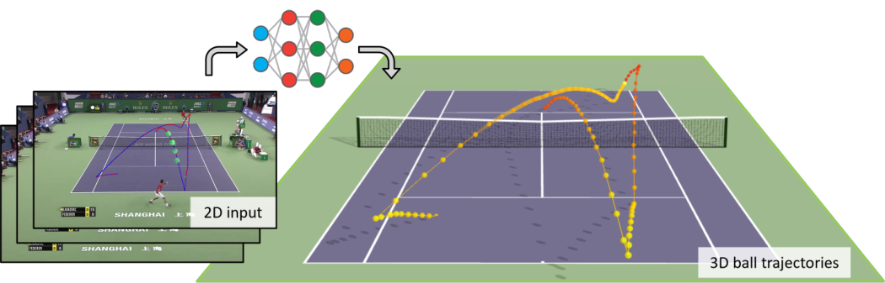
Figure 1 : Given a 2D ball tracking sequence, we estimate the ball’s 3D motion, which includes multiple bounces and hits.
图 1：给定 2D 球跟踪序列，我们估计球的 3D 运动，其中包括多次弹跳和击球。
The main difficulty arises from the inherent ambiguity where a 2D trajectory input can have multiple valid 3D motions that project to the same 2D trajectory.
主要困难来自于固有的模糊性，其中 2D 轨迹输入可以有多个有效的 3D 运动投影到相同的 2D 轨迹。
Past solutions rely on various cues, such as the shadow of the ball, or estimating the ball size in pixel and relating it to the distance.
过去的解决方案依赖于各种线索，例如球的阴影，或以像素为单位估计球的大小并将其与距离联系起来。
These geometric-based approaches often have restricting requirements and are not applicable to the vast majority of existing videos.
这些基于几何的方法通常具有限制性要求，并且不适用于绝大多数现有视频。
Physics-based techniques place strong assumptions on the ball motion and require the entire trajectory to be precisely segmented into multiple projectiles, where each can be modeled with a simple physics equation.
基于物理的技术对球的运动做出了强有力的假设，并要求将整个轨迹精确地分割成多个射弹，其中每个射弹都可以使用简单的物理方程进行建模。
In practice, such segmentation is highly error-prone and sensitive to tracking noise.
在实践中，这种分割非常容易出错并且对跟踪噪声敏感。
Learning-based approaches, on the other hand, attempt to learn physical motion priors from data; however, none has demonstrated a working solution that solves real-world bouncing balls with multiple continuous trajectories.
另一方面，基于学习的方法尝试从数据中学习物理运动先验。然而，没有人展示出一种可行的解决方案来解决现实世界中具有多个连续轨迹的弹跳球。
One major obstacle for learning-based techniques is the lack of large real-world training data with 3D ground truth, which is often difficult to collect.
基于学习的技术的一个主要障碍是缺乏具有 3D 真值的大量现实世界训练数据，而这些数据通常很难收集。
A common solution is to learn instead from simulated data; however, even with unlimited data, simply treating this problem as sequence modeling and directly regressing 2D to 3D coordinates often generalizes poorly to real-world scenarios.
一个常见的解决方案是从模拟数据中学习；然而，即使数据无限，简单地将这个问题视为序列建模并直接将 2D 回归到 3D 坐标通常也很难推广到现实场景。
This can happen when crucial properties such as invariance to the camera intrinsic, shifting heights, or geometric-based reprojection consistency are ignored.
当忽略相机固有不变性、移动高度或基于几何的重投影一致性等关键属性时，就会发生这种情况。
Here we demonstrate that the key ingredient to our state-of-the-art performance is the right motion representations that leverage these inductive biases in our learning-based pipeline.
在这里，我们证明了我们最先进性能的关键因素是正确的运动表示，它在我们基于学习的流程中利用了这些归纳偏差。
In particular, we designed a novel canonical representation that is independent of the camera parameters to handle multiple input viewpoints and a series of intermediate representations that successively refine the output trajectory by exploiting advantages of both relative and absolute coordinates.
特别是，我们设计了一种独立于相机参数的新颖的规范化表示，以处理多个输入视点和一系列中间表示，这些中间表示通过利用相对坐标和绝对坐标的优点连续细化输出轨迹。
With these representations, our pipeline based on simple homogeneous LSTMs significantly outperforms other competing techniques and can generalize to real-world trajectories despite training from simulation.
有了这些表示，我们基于简单同质 LSTM 的流程显着优于其他竞争技术，并且可以推广到现实世界的轨迹，尽管是通过模拟进行训练的。
In summary, our contributions are:
总之，我们的贡献是：
- •
A state-of-the-art pipeline for estimating 3D trajectory of a bouncing ball from a sequence of 2D positions.
最先进的流程，用于根据一系列 2D 位置估计弹跳球的 3D 轨迹。
This pipeline can handle real-world scenarios with multiple continuous trajectories, not demonstrated by prior work.
该流程可以处理具有多个连续轨迹的现实场景，这是先前的工作未证明的。
- •
Novel representations that support training and inference on multiple camera viewpoints within a single network.
支持单个网络内多个摄像机视点的训练和推理的新颖表示。
- •
An extensive analysis of different trajectory parameterizations and our architectural design.
对不同轨迹参数化和我们的架构设计的广泛分析。
- •
A dataset of a real bouncing ball with 3D ground truth, which will be released along with our source code.
具有 3D 真值的真实弹跳球的数据集，它将与我们的源代码一起发布。
2 Related Work2 相关工作
Our problem setup has been mostly explored in the area of sport video analysis.
我们的问题设置主要在体育视频分析领域进行了探索。
The accurate estimation of a ball trajectory in competitive sports, such as soccer, basketball, etc. is essential for the game understanding.
在足球、篮球等竞技运动中，准确估计球轨迹对于理解比赛至关重要。
Modern systems, such as the Goal-Line Technology [ 13 ] , provide necessary information for the development of the game in real time or for the judge through automatic line calling [ 1 ] , while other frameworks [ 47 ] provide statistics for after-game analysis.
现代系统，如门线技术[13]，为比赛的发展实时提供必要的信息，或者通过自动叫线[1]为裁判提供必要的信息，而其他框架[47]则提供赛后分析的统计数据。
However, most of these commercial products require expensive and elaborated multi-view setups such as Intel’s True View [ 20 ] or special tracking devices.
然而，大多数这些商业产品都需要昂贵且复杂的多视图设置，例如英特尔的 True View [20] 或特殊的跟踪设备。
Techniques for estimating the 3D trajectory of a ball in motion from 2D input can be categorized by the type of input capture.
根据 2D 输入估计运动中球的 3D 轨迹的技术可以按输入捕获的类型进行分类。
Many techniques rely on a calibrated multi-camera setup and solve the 3D reconstruction by detecting the ball across all views and performing triangulation [ 21 , 22 , 41 , 35 , 25 , 29 ] , while some others use stereo cameras [ 27 , 52 , 5 ] .
许多技术依赖于校准的多相机设置，并通过在所有视图中检测球并执行三角测量来解决 3D 重建问题 [21,22,41,35,25,29]，而其他一些技术则使用立体相机 [27,52,5]。
Our work focuses on a setup with a fixed, monocular video capture of the ball, where triangulation-based techniques are not applicable.
我们的工作重点是使用固定的单目视频捕捉球的设置，其中基于三角测量的技术不适用。
For monocular video setups, inferring the 3D location of a ball from 2D pixels is inherently ill-posed, despite the geometric/appearance cues that often appear in the video frames.
对于单目视频设置，从 2D 像素推断球的 3D 位置本质上是不适定的，尽管视频帧中经常出现几何/外观线索。
Reid et al. [ 37 ] utilize the shadow from the ball and a reference player to obtain the ball’s height, but not all illumination or weather conditions can produce sufficient shadows.
里德等人。 [37]利用球和参考球员的阴影来获得球的高度，但并非所有照明或天气条件都能产生足够的阴影。
Calandre et al. [ 8 ] estimate the size of a ping pong ball in pixels and then convert it into the distance from the camera using calibrated camera parameters.
卡兰德雷等人。 [8]估计乒乓球的大小（以像素为单位），然后使用校准的相机参数将其转换为距相机的距离。
However, in sports such as tennis and soccer, the distance between the camera and the ball is too large for accurate size estimation.
然而，在网球和足球等运动中，相机和球之间的距离太大，无法准确估计尺寸。
Additionally, in these sports, the ball typically moves very fast, which may introduce motion blur and severely degrade performance.
此外，在这些运动中，球通常移动得非常快，这可能会导致运动模糊并严重降低性能。
Mocanu et al. [ 30 ] propose a learning method that uses energy-based restricted Boltzmann machines to predict the 3D ball position from its 2D projection.
莫卡努等人。 [30]提出了一种学习方法，使用基于能量的受限玻尔兹曼机从 2D 投影预测 3D 球位置。
However, the underlying learning algorithm is complex and difficult to train [ 14 , 43 ] .
然而，底层学习算法复杂且难以训练[14, 43]。
Since the physics of ball motion is well understood, many methods [ 50 , 42 , 34 , 33 , 9 , 46 ] incorporate physical constraints to compensate for the lack of 3D information and inconsistent 2D observations.
由于球运动的物理原理已被很好地理解，因此许多方法 [50,42,34,33,9,46] 结合了物理约束来补偿 3D 信息的缺乏和不一致的 2D 观察。
The key idea is to estimate the physical parameters that best explain the detected trajectory, such as velocity and initial force.
关键思想是估计最能解释检测到的轨迹的物理参数，例如速度和初始力。
However, these methods require segmenting the input trajectory into individual projectiles or linear motions, a process highly prone to errors.
然而，这些方法需要将输入轨迹分割成单独的弹丸或线性运动，这个过程很容易出错。
There are heuristics that can be used for trajectory segmentation, such as detecting velocity changes, but in real-world scenarios, noisy and missing ball detections render those methods impractical.
有一些启发式方法可用于轨迹分割，例如检测速度变化，但在现实场景中，噪声和漏球检测使得这些方法不切实际。
Chen et al. [ 10 ] classify each trajectory segment as a pass (linear motion) or a cross (parabola motion) but require a set of hard-coded rules that do not generalize to more complex motions.
陈等人。 [10]将每个轨迹段分类为通过（线性运动）或交叉（抛物线运动），但需要一组硬编码规则，这些规则不能推广到更复杂的运动。
Other methods impose additional constraints, such as assuming that projectile motion occurs within a vertical 2D plane [ 23 , 40 , 28 ] .
其他方法施加额外的约束，例如假设抛射运动发生在垂直的 2D 平面内 [23,40,28]。
This assumption can break down for curved trajectories caused by lateral motion or spin.
对于横向运动或旋转引起的弯曲轨迹，这种假设可能不成立。
Our data-driven approach avoids such assumptions and can, in principle, learn any trajectory pattern given appropriate training data.
我们的数据驱动方法避免了此类假设，并且原则上可以在给定适当的训练数据的情况下学习任何轨迹模式。
A number of studies focus on analyzing the dynamics of moving objects in an environment.
许多研究侧重于分析环境中移动物体的动力学。
For example, [ 32 ] aims to learn the dynamics of an object given a single image, [ 19 , 36 ] generate plausible trajectories of virtual objects as they interact with an environment estimated from a still image, [ 31 ] reconstructs the 3D trajectories of colliding objects from a video, [ 44 , 45 ] recover 6-DoF pose and shape of a fast moving object from motion-blurred images, and [ 4 ] estimates the physical parameters from a free flight video.
例如，[ 32 ]旨在学习给定单个图像的对象的动力学，[ 19 , 36 ]在虚拟对象与从静止图像估计的环境交互时生成虚拟对象的合理轨迹，[ 31 ]从视频中重建碰撞对象的3D轨迹，[ 44 , 45 ]从运动模糊图像中恢复快速移动对象的6-DoF姿态和形状，以及[ 4]从自由飞行视频中估计物理参数。
However, those tasks are different from ours as we focus on estimating the exact 3D position of the ball given its projection from a 2D tracking sequence.
然而，这些任务与我们的不同，因为我们专注于根据 2D 跟踪序列的投影来估计球的准确 3D 位置。
Recent work, SynthNet [ 11 ] , proposes a two-stage pipeline incorporating tennis physics: first detecting ball hits and bounces to segment trajectories, then reconstructing the corresponding 3D trajectories by predicting initial conditions of projectile motion.
最近的工作 SynthNet [11] 提出了一种结合网球物理学的两级流程：首先检测球的击打和弹跳以分割轨迹，然后通过预测抛射运动的初始条件来重建相应的 3D 轨迹。
While their pipeline enforces physical constraints specific to tennis ball dynamics, it does not enforce projection consistency.
虽然他们的流程强制执行特定于网球动力学的物理约束，但它并没有强制执行投影一致性。
As a result, errors in estimating the initial conditions can significantly degrade the quality of the reconstruction.
因此，估计初始条件的错误会显着降低重建的质量。
In contrast, our method implicitly learns the ball’s physical motion from simulated data and directly predicts the height corresponding to each 2D tracking point, inherently ensuring that the reconstructed 3D trajectory always aligns with the original 2D input.
相比之下，我们的方法隐式地从模拟数据中学习球的物理运动，并直接预测每个 2D 跟踪点对应的高度，从本质上确保重建的 3D 轨迹始终与原始 2D 输入对齐。
A similar combination of physics with learning-based methods has also been applied to other research directions, such as human motion estimation [ 39 , 48 ] , human pose tracking [ 6 , 7 ] , and human-object-scene interactions [ 26 , 53 , 54 ] .
物理学与基于学习的方法的类似组合也已应用于其他研究方向，例如人体运动估计[39,48]、人体姿态跟踪[6,7]和人-物体-场景交互[26,53,54]。
However, these methods are human centered and not directly applicable to more general settings.
然而，这些方法是以人为中心的，不能直接适用于更一般的环境。
Figure 2 : Method overview.
图 2：方法概述。
Given a 2D ball tracking sequence , we first convert each tracked point to our novel 3D plane points parameterization and then predict the 3D ball coordinates .
给定 2D 球跟踪序列 ，我们首先将每个跟踪点转换为我们新颖的 3D 平面点参数化 ，然后预测 3D 球坐标 。
Our pipeline consists of 3 main components. 1) EoT network takes in the plane point temporal differences and predicts the end-of-trajectory (EoT) probability. 2) Height network takes in the EoT probability and plane points to predict the height, which is then converted to a 3D coordinate. 3) Refinement network then refines the coarse 3D coordinate and produces the final output.
我们的流程由 3 个主要部分组成。 1) EoT 网络吸收平面点时间差异并预测轨迹结束 (EoT) 概率。 2) 高度网络采用 EoT 概率和平面点来预测高度，然后将其转换为 3D 坐标。 3) 细化网络然后细化粗略的 3D 坐标并产生最终输出。
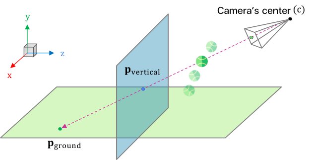
Figure 3 : Ray parameterization.
图 3：射线参数化。
We represent a 2D track point as the associated 3D viewing ray, parameterized as two intersection points of the ray with the ground plane (y=0) and a vertical plane (e.g., z=0).
我们将 2D 轨迹点表示为关联的 3D 观察光线，参数化为光线与地平面 (y=0) 和垂直平面（例如 z=0）的两个交点 。
3 Approach3 方法
Given a 2D ball tracking sequence, our goal is to estimate the corresponding 3D position of each 2D point.
给定球的二维跟踪序列，我们的目标是估计每个二维点所对应的三维位置。
We focus on real-world bouncing scenarios across different sports.
本文关注不同运动中的真实反弹场景。
Each input sequence may contain multiple trajectories, each beginning when a force is applied to the ball (e.g., a soccer player’s kick) and ending just before another force acts or the ball comes to rest.
每段输入序列可以包含多条轨迹；每条轨迹从球受到一次外力（例如足球运动员踢球）时开始，到下一次外力作用前或球停止运动时结束。
A single trajectory can include multiple bounces on the ground.
一条轨迹可以包含多次触地反弹。
We assume that both the beginning and end of the input sequence lie on the ground ( ) and the camera parameters are known.
我们假设输入序列首尾两帧中的球都位于地面上（），且相机参数已知。
To facilitate 3D predictions from different camera perspectives, one of our key ideas is to first map the raw 2D track points into a canonical 3D space.
为支持不同相机视角下的三维预测，我们的一项核心思路是：先将原始二维轨迹点映射到规范化三维空间。
In particular, we represent each 2D track point using a 3D ray and parameterize it further as intersection points on two perpendicular planes.
具体而言，每个二维轨迹点用一条三维射线表示，再将射线参数化为它与两个互相垂直平面的交点。
Secondly, we observe that absolute and relative coordinates have their unique advantages and design a pipeline that exploits both using multiple types of parameterization, which is proved much more effective than naïve approaches in Section 4.3.1 .
此外，绝对坐标和相对坐标各有优势，因此我们通过多种参数化方式将二者结合；第 4.3.1 节表明，这比直接采用简单表示更有效。
3.1 Trajectory estimation pipeline3.1 轨迹估计流程
Our pipeline consists of three main components (Figure 2 ): 1) An end-of-trajectory prediction network, which predicts the trajectory boundaries of the input sequence by predicting the probability of the ball ending its current trajectory for each time step, 2) A height prediction network, which takes the input sequence and the end-of-trajectory probabilities to estimate the height from the ground for each time step, 3) A refinement network, which refines the 3D coordinates reconstructed from the predicted heights.
我们的流程由三个主要组件组成（图 2）：1) 轨迹结束预测网络，通过预测每个时间步的球结束其当前轨迹的概率来预测输入序列的轨迹边界，2) 高度预测网络，它采用输入序列和轨迹结束概率来估计每个时间步距地面的高度，3) 细化网络，细化根据预测高度重建的 3D 坐标。
The input to these components will be our new representation of the 2D track points, which will be explained next.
这些组件的输入将是我们对 2D 轨迹点的新表示，这将在接下来进行解释。
3.1.1 Input parameterization3.1.1 输入参数化
To handle 2D tracking inputs that may come from different cameras from various locations, we propose to reparameterize each 2D point in the input sequence as a representation in a canonical 3D space that is independent of the camera’s parameters, such as its location, orientation, or focal length.
为处理来自不同位置、不同相机的二维轨迹输入，我们把每个二维点重新参数化为规范化三维空间中的表示，使这种表示不依赖相机的位置、朝向或焦距。
That is, instead of using 2D coordinates directly as input to our prediction networks, we first back-project each 2D pixel to its corresponding 3D viewing ray that starts from the camera’s center of projection and points toward the pixel on the image plane in the direction .
具体而言，我们不直接把二维坐标输入预测网络，而是先将每个二维像素反投影为三维视线 ；该射线从相机投影中心 出发，沿 方向指向图像平面上的对应像素。
Given a 2D pixel location and the extrinsic , the center and direction can be computed by:
给定二维像素位置 及相机外参 ，射线的起点与方向可按下式计算：
| (1) | ||||
| (2) |
where is the dehomogenize operator that removes the last element: , is the focal length, and is the principle point.
其中 是去齐次化算子，用来移除最后一个分量：； 为焦距， 为主点。
This ray representation is not unique, and ideally we want all collinear rays to share the same representation.
这种射线表示并不唯一；理想情况下，所有共线射线应具有相同表示。
We solve this by reparameterizing this ray as two intersection points of the ray with two planes: the ground plane ( ) and a vertical plane (e.g., ).
为此，我们将射线重新参数化为它与两个平面的交点：地平面（）和一个竖直平面（例如 ）。
In sport applications such as tennis, this vertical plane can be set coplanar with the court’s net, as a convenient choice (see Figure 3 ).
在网球等运动中，可以方便地选择与球网共面的竖直平面（见图 3）。
Our input representation for each 2D track point is thus given by , where are the intersection points of the ray with the two planes.
于是，每个二维轨迹点的输入表示为 ，其中 是射线与上述两个平面的交点。
Here we assume that the camera is placed high enough in the scene and facing downward so that no rays are parallel to the ground or the vertical plane.
这里假设相机在场景中架设得足够高，并向下拍摄，使相关视线既不平行于地平面，也不平行于该竖直平面。
In practice, we drop the y-coordinate from and z-coordinate from because they are always zero, resulting in .
实践中，由于相应坐标恒为零，我们删除 的 y 坐标及 的 z 坐标，得到 。
3.1.2 End-of-trajectory (EoT) prediction network3.1.2 轨迹结束（EoT）预测网络
The goal of this network is to predict the trajectory boundaries of the input sequence.
该网络旨在预测输入序列中的轨迹边界。
Our intuition is that if our height prediction network has some information about when the trajectories start and end, or when the ball changes its course, it could solve a simpler estimation problem involving one trajectory moving in a relatively constant x-z direction.
我们的直觉是：若高度预测网络知道轨迹何时开始、结束，或球何时改变运动方向，就能将问题简化为对沿近似固定 x-z 方向运动的单条轨迹进行估计。
Unlike in physics-based approaches, this information is not used to hard-segment trajectories but will be used as an auxiliary signal for the height prediction network.
与基于物理的方法不同，这些信息不用于硬性切分轨迹，而是作为高度预测网络的辅助信号。
Specifically, the EoT network takes as input the temporal differences of plane points and predicts an EoT probability of the ball ending its current trajectory or coming to a stop.
具体来说，EoT 网络将平面点 的时间差异作为输入，并预测球结束其当前轨迹或停止的 EoT 概率 。
This “relative” representation helps provide invariance to the initial plane point locations.
这种“相对”表示有助于为初始平面点位置提供不变性。
In other words, if a network with this invariance learns to predict a sequence starting at , it can predict shifted versions of the same sequence that start at for any .
换句话说，如果具有这种不变性的网络学习预测从 开始的序列，它可以为任何 预测从 开始的相同序列的移位版本。
This network ( ) is modeled with a stack of 3 bidirectional-LSTMs with shortcut connections between each layer inspired by [ 51 ] .
该网络 () 采用 3 个双向 LSTM 堆栈进行建模，每层之间都有快捷连接，其灵感来自 [51]。
The last hidden state is connected to 3 fully-connected layers to output the EoT probability .
最后一个隐藏状态连接到 3 个全连接层以输出 EoT 概率 。
The architecture details are provided in Appendix D .
附录 D 中提供了架构详细信息。
3.1.3 Height prediction network3.1.3 高度预测网络
For our problem, predicting 3D coordinates directly from the input sequence is one possible design choice; however, this tends to perform poorly, and the prediction simply ignores important projection consistency (i.e., the projection of the predicted 3D point should match the pixel).
一种可行设计是直接由输入序列预测三维坐标，但其效果通常较差，而且会忽略重要的投影一致性——预测三维点的投影应与观测像素吻合。
Predicting depth values can ensure this consistency, though depths are defined with respect to the arbitrary camera’s location, which further complicates the prediction.
预测深度可以保证这种一致性，但深度依赖任意设置的相机位置，这会进一步增加预测难度。
Instead, we first predict the height of each point, which has only one degree of freedom and is independent of the camera’s location.
因此，我们先预测每个点的高度；高度只有一个自由度，且不依赖相机位置。
With our assumption that no rays are parallel to the ground, a height of a track point will uniquely determine its 3D coordinate , where is the solution to and is the y-coordinate of the viewing ray associated with the track point.
在视线不平行于地面的假设下，轨迹点的高度 唯一确定其三维坐标 ，其中 是 的解， 是该轨迹点对应视线的 y 坐标。
Thus, the predicted height is always projection-consistent and will be converted to 3D coordinates later (Section 3.1.4 ).
因此，预测高度始终满足投影一致性，随后再将其转换为三维坐标（第 3.1.4 节）。
To predict the height, we first use two unidirectional LSTMs ( , ) that first compute forward and backward temporal height differences.
为了预测高度，我们首先使用两个单向 LSTM（、），它们首先计算前向和后向时间高度差。
Then, we aggregate and combine them to produce a single height sequence , which will be refined with another bidirectional to produce .
然后，我们聚合并组合它们以生成单个高度序列 ，该序列将使用另一个双向 进行细化以生成 。
Specifically, takes as input at each time and predicts , where is computed by accumulating from the earlier step: and .
具体来说， 在每次 处将 作为输入并预测 ，其中 是通过累加先前步骤中的 来计算的： 和 。
The backward works similarly but starts accumulating from backward.
向后的 的工作方式类似，但从 向后开始累积。
This step yields and through accumulation, then we combine them with a simple ramp sum:
这一步通过累加产生 和 ，然后我们将它们与一个简单的斜坡总和结合起来：
| (3) |
where .
其中 。
The motivation for combining both directions is to reduce long aggregation errors by relying more on the forward sum near the beginning and the backward sum near the end.
结合两个方向的目的，是减少长序列累加误差：序列开头更依赖前向累加结果，序列末尾更依赖后向累加结果。
Finally, the weighted sum together with the plane points input will be fed to to predict .
最后，将加权和 与平面交点输入 一起送入 ，预测 。
The architecture of is identical to (Sec. 3.1.2 ).
的网络结构与 相同（第 3.1.2 节）。
This design makes use of the relative representations for both the input and output of and , which help achieve invariance to shifting heights.
该设计利用 和 输入和输出的相对表示，这有助于实现移动高度的不变性。
However, the relative representations alone lack the awareness of absolute positioning and can drift over time or protrude underground.
然而，仅相对表示缺乏绝对定位的意识，并且可能随着时间的推移而漂移或突出到地下。
The use of here helps alleviate this issue by operating on absolute heights and absolute plane points to refine the height sequence.
此处使用 通过对绝对高度和绝对平面点进行操作来细化高度序列，有助于缓解此问题。
3.1.4 Refinement network3.1.4 细化网络
The earlier height parameterization ensures that the projections of the predicted points always match their corresponding pixels.
早期的高度参数化确保预测点的投影始终与其对应的像素匹配。
However, in real-world uses, the input 2D tracking sequence may come from a tracking algorithm, which can give noisy 2D estimates.
然而，在实际使用中，输入的 2D 跟踪序列可能来自跟踪算法，该算法可能会给出有噪声的 2D 估计。
Constraining the projected 3D coordinates to exactly match these noisy 2D estimates will subsequently lead to the wrong 3D predictions.
限制投影 3D 坐标以精确匹配这些含噪的 2D 估计将随后导致错误的 3D 预测。
So in this step, we use another network to refine the prediction by giving it the flexibility to modify the actual 3D coordinates.
因此，在这一步中，我们使用另一个网络来优化预测，赋予其修改实际 3D 坐标的灵活性。
This also helps the network utilize other priors such as trajectory smoothness in 3D space learned from simulation.
这也有助于网络利用其他先验，例如从模拟中学习到的 3D 空间中的轨迹平滑度。
Given our refined height , we convert it to the corresponding 3D coordinate , again via solving .
给定我们的精确高度 ，我们再次通过求解 将其转换为相应的 3D 坐标 。
The resulting 3D sequence together with the plane points will be input to our refinement network to predict and output the final 3D coordinates .
生成的 3D 序列与平面点 将被输入到我们的细化网络以预测 并输出最终的 3D 坐标 。
The choice of predicting the deltas makes it easier to initially learn the identity function and focus on the refinement, as motivated in ResNet [ 17 ] .
正如 ResNet [17] 中所激励的那样，选择预测增量可以更轻松地初始学习恒等函数并专注于细化。
This refinement network ( ) is also a stack of 3 BiLSTMs similar to and .
这个细化网络（ ）也是类似于 和 的 3 个 BiLSTM 的堆栈。
3.2 Network training3.2 网络训练
We train our networks using simulated data generated from the PhysX physics engine [ 3 ] in Unity.
我们使用 Unity 中 PhysX 物理引擎 [3] 生成的模拟数据来训练我们的网络。
We simulate a bouncing ball by applying a series of impulse forces and record the 3D positions, 2D projected coordinates, and end-of-trajectory flags for each time step.
我们通过施加一系列脉冲力来模拟弹跳球，并记录每个时间步的 3D 位置、2D 投影坐标和轨迹结束标志。
These variables will be used as supervised training data.
这些变量将用作监督训练数据。
Training, validation, and testing data are generated separately.
训练、验证和测试数据是单独生成的。
We use the following loss functions to jointly train all networks.
我们使用以下损失函数来联合训练所有网络。
End-of-Trajectory loss.
轨迹末端损失。
We use weighted binary cross-entropy for the EoT prediction network:
我们对 EoT 预测网络使用加权二元交叉熵：
|
|
(4) |
where is the ground-truth EoT binary flag, is our predicted EoT probability, and is a balancing weight between the two classes ( or 1).
其中 是真值 EoT 二进制标志， 是我们预测的 EoT 概率， 是两个类之间的平衡权重（ 或 1）。
3D reconstruction loss.
3D 重建损失。
We use the L2 loss for the reconstruction error of 3D coordinates:
我们使用 L2 损失来计算 3D 坐标的重建误差：
| (5) |
where is the ground-truth 3D coordinate, and is the predicted coordinate after refinement.
其中 是真值 3D 坐标， 是细化后的预测坐标。
Below ground loss.
地下损失。
We penalize every point below the ground plane using its squared distance:
我们使用其平方距离来惩罚地平面 以下的每个点：
| (6) |
where contains the y coordinates of all the predicted points below the ground.
其中 包含地面以下所有预测点的 y 坐标。
Total Loss.
全损。
We optimize all LSTMs together using the sum of all loss functions:
我们使用所有损失函数的总和来一起优化所有 LSTM：
| (7) |
where and are balancing weights.
其中 和 是平衡权重。
4 Experiments4 实验
We conduct experiments on four synthetic and three real-world datasets, provide comparisons to state-of-the-art techniques, and perform ablation studies on parameterization, pipeline components, and loss functions.
我们对四个合成数据集和三个真实世界数据集进行实验，提供与最先进技术的比较，并对参数化、流程组件和损失函数进行消融研究。
Implementation, simulation details, and runtime are in the Appendix.
附录中提供了实现、模拟细节和运行时间。
Evaluation metrics.
评估指标。
We use normalized root-mean-square error (NRMSE) for all experiments following [ 30 ] , except when comparing with SynthNet [ 11 ] (Section 4.2.1 ), where we follow their evaluation protocol.
我们对[30]之后的所有实验都使用归一化均方根误差（NRMSE），除了与SynthNet[11]（第4.2.1节）进行比较时，我们遵循他们的评估协议。
NRMSEs are RMSEs computed between predicted and ground-truth coordinates, normalized by the maximum range in the , , or dimensions of the ground truth in each dataset.
NRMSE 是在预测坐标和真值坐标之间计算的 RMSE，通过每个数据集中真值的 、 或 维度的最大范围进行归一化。
As acceptable error is application-specific, we also report NRMSEs relative to camera distance and area width in Appendix F .
由于可接受的误差是特定于应用程序的，因此我们还在附录 F 中报告了与相机距离和区域宽度相关的 NRMSE。
4.1 Datasets4.1 数据集
This section describes all datasets used in our experiments, all with 3D ground truth except Real TrackNet [ 18 ] , used for comparison with SynthNet [ 11 ] (Section 4.2.1 ).
本节描述了我们实验中使用的所有数据集，除了 Real TrackNet [18] 之外，所有数据集都具有 3D 真值，用于与 SynthNet [11] 进行比较（第 4.2.1 节）。
Real TrackNet: This dataset [ 18 ] contains 81 video clips from 10 tennis matches, captured from a broadcast camera, along with 2D ball-tracking annotations.
Real TrackNet：该数据集 [18] 包含来自 10 场网球比赛的 81 个视频剪辑，这些视频剪辑是从广播摄像机捕获的，以及 2D 球跟踪标注。
These clips have varying numbers of strokes between 1-10.
这些剪辑的笔划数在 1 到 10 之间。
We calibrated the camera through solving the perspective-n-point problem with 2D-3D correspondence provided by a court detection algorithm [ 12 ] .
我们通过使用球场检测算法 [12] 提供的 2D-3D 对应关系来解决透视 n 点问题来校准相机。
Next, we describe the datasets used for comparison with other baseline methods (Section 4.2.2 ) and ablation studies.
接下来，我们描述用于与其他基线方法（第 4.2.2 节）和消融研究进行比较的数据集。
Real Mocap: We captured a ping pong ball’s bouncing motion in our m 2 motion capture studio using an IR reflective sticker and eight synchronized IR cameras at 50 fps.
真实动作捕捉：我们在 m 2 动作捕捉工作室中使用红外反光贴纸和八个同步红外摄像机以 50 fps 捕捉乒乓球的弹跳运动。
The dataset consists of 344 sequences (103,872 data points) with highly accurate 3D ground truth from the Mocap system, and 2D trajectories from all eight cameras.
该数据集由 344 个序列（103,872 个数据点）组成，具有来自 Mocap 系统的高精度 3D 真值以及来自所有八个摄像机的 2D 轨迹。
Real IPL: This dataset [ 15 ] contains a 2-minute capture of a real soccer match from 6 synchronized cameras on both touchlines of the pitch and 2D tracking annotations.
真实 IPL：该数据集 [15] 包含球场两条边线上 6 个同步摄像机对一场真实足球比赛的 2 分钟捕捉和 2D 跟踪标注。
The 3D ground truth was estimated using triangulation and the camera pose estimation pipeline in [ 38 ] .
3D 真值是使用三角测量和[38]中的相机姿态估计流程来估计的。
Nine sequences were successfully calibrated, with missing track points filled using an autoregressive LSTM (detailed in our Appendix).
九个序列已成功校准，并使用自回归 LSTM 填充了缺失的轨迹点（详见附录）。
Synthetic TrackNet / Mocap / IPL datasets: We created synthetic counterparts for each real dataset (Mocap, IPL, TrackNet) that match their camera parameters and trajectory characteristics.
合成 TrackNet / Mocap / IPL 数据集：我们为每个真实数据集（Mocap、IPL、TrackNet）创建了与其相机参数和轨迹特征相匹配的合成对应数据集。
We simulate projectiles for Mocap and IPL and simulate a tennis game with two players for TrackNet.
我们为 Mocap 和 IPL 模拟射弹，并为 TrackNet 模拟两名球员的网球比赛。
Each dataset contains 5,000 training sequences and 500 test sequences.
每个数据集包含 5,000 个训练序列和 500 个测试序列。
Synthetic Single-Launch dataset: To compare with [ 30 , 46 ] and match their setups, we create this dataset with 300 training and 100 testing sequences of single-launch trajectories, where the ball is launched once and bounces until it stops.
合成单次发射数据集：为了与 [30, 46] 进行比较并匹配它们的设置，我们创建了包含 300 个训练和 100 个单次发射轨迹测试序列的数据集，其中球发射一次并弹跳直至停止。
More details are in Appendix C .
更多详细信息请参见附录 C。
4.2 Comparison with prior work4.2 与先前工作的比较
In this section, we compare our method with the most recent SOTA method, SynthNet [ 11 ] , which is designed for and evaluated on tennis matches from the TrackNet [ 18 ] .
在本节中，我们将我们的方法与最新的 SOTA 方法 SynthNet [11] 进行比较，后者是针对 TrackNet [18] 的网球比赛而设计和评估的。
We also evaluate our method against existing methods [ 30 , 46 ] that assume single-launch trajectories, a more restrictive setting than ours.
我们还根据现有方法 [30, 46] 评估我们的方法，这些方法假设单次发射轨迹，这是比我们的限制更严格的设置。
We exclude geometry-based approaches that rely on shadows or player height information [ 37 , 23 ] , as these assumptions are too restrictive and the required information is unavailable in our datasets and most real-world scenarios.
我们排除依赖于阴影或球员高度信息的基于几何的方法 [37, 23]，因为这些假设限制性太大，并且在我们的数据集和大多数现实场景中无法获得所需的信息。
For completeness, we also compare [ 30 , 46 ] on Real IPL and Mocap in Table 11 (Appendix), where they produce large errors since these datasets contain trajectories with multiple launches beyond their assumptions [1]
为了完整起见，我们还在表 11（附录）中的 Real IPL 和 Mocap 上比较了 [30、46]，它们产生了很大的错误，因为这些数据集包含超出其假设的多次发射轨迹 [1]
4.2.1 Comparison on tennis matches—TrackNet [18]4.2.1 网球比赛对比——TrackNet[18]
We compare our method with SynthNet [ 11 ] on Real TrackNet [ 18 ] .
我们将我们的方法与 Real TrackNet [18] 上的 SynthNet [11] 进行比较。
Following SynthNet’s evaluation protocol, we assess the tennis ball’s landing position using their proposed metrics: landing accuracy (T.F1 and T.acc) and landing error (LE).
遵循 SynthNet 的评估协议，我们使用他们提出的指标评估网球的着陆位置：着陆精度（T.F1 和 T.acc）和着陆误差（LE）。
The contact point annotation frame is taken directly from TrackNet’s labels and used to generate the 3D contact point ground truth via ray tracing from the calibrated camera onto the court surface.
接触点标注帧直接取自 TrackNet 的标签，并用于通过从校准相机到球场表面的光线追踪来生成 3D 接触点真值。
We present the results in Table 4 , with their results taken directly from their paper.
我们在表 4 中列出了结果，其结果直接取自他们的论文。
Our method outperforms SynthNet across all metrics, achieving an average landing accuracy of 87.21 , an F1-score of 0.807, and a significantly lower landing error of 0.63 meters compared to 3.58 meters for SynthNet.
我们的方法在所有指标上都优于 SynthNet，平均着陆精度为 87.21 ，F1 分数为 0.807，与 SynthNet 的 3.58 米相比，着陆误差显着降低为 0.63 米。
4.2.2 Comparison on single-launch trajectories4.2.2 单次发射轨迹对比
We evaluate against Shen et al. [ 46 ] and Mocanu et al. [ 30 ] on the Synthetic Single-Launch Trajectory dataset, which matches their problem setup and assumptions.
我们针对 Shen 等人进行评估。 [46]和莫卡努等人。 [30]在合成单次发射轨迹数据集上，这与他们的问题设置和假设相匹配。
The physics-based method [ 46 ] minimizes reprojection error by optimizing two physical parameters: initial velocity and position.
基于物理的方法[46]通过优化两个物理参数：初始速度和位置来最小化重投影误差。
It represents an improved physics-based method that builds upon [ 34 , 42 ] by incorporating a contact points constraint.
它代表了一种改进的基于物理的方法，该方法通过合并接触点约束而建立在[34, 42]的基础上。
Since no source code is available, we reimplemented this baseline.
由于没有可用的源代码，我们重新实现了该基线。
The learning-based method [ 30 ] models projectile motion using restricted Boltzmann machines.
基于学习的方法[30]使用受限玻尔兹曼机对抛射运动进行建模。
We train their model using their official code and train our method on the same 300 sequences.
我们使用他们的官方代码训练他们的模型，并在相同的 300 个序列上训练我们的方法。
We use the same test set for all methods.
我们对所有方法使用相同的测试集。
Additionally, we assess robustness to tracking errors by testing with different levels of noise in the 2D input.
此外，我们通过测试 2D 输入中不同级别的噪声来评估跟踪误差的稳健性。
We report distance NRMSEs and standard errors in Table 4.3.2 and provide a qualitative comparison in Figure 7 .
我们在表 4.3.2 中报告距离 NRMSE 和标准误差，并在图 7 中提供定性比较。
Our method achieves the best NRMSE of 0.03, outperforming [ 30 ] (1.02) 1 and [ 46 ] (0.11).
我们的方法实现了 0.03 的最佳 NRMSE，优于 [30] (1.02) 1 和 [46] (0.11)。
Our NRMSE translates to about 0.6cm RMSE on this dataset.
我们的 NRMSE 在此数据集上转换为约 0.6cm RMSE。
Our method also degrades minimally compared to others when the noise increases up to 25 pixels (input resolution is 1664 1088).
当噪声增加到 25 个像素（输入分辨率为 1664 1088）时，与其他方法相比，我们的方法的性能下降也最小。
4.3 Ablation analysis4.3 消融分析
4.3.1 Input / output parameterization4.3.1 输入/输出参数化
For this ablation study, we evaluate our plane points parameterization against five other alternatives:
对于这项消融研究，我们针对其他五个替代方案评估了我们的平面点参数化：
- 1.
Pixel: uses 2D pixel coordinates as input.
像素：使用 2D 像素坐标作为输入。
- 2.
Pixel + Extrinsic: uses 2D pixel coordinates concatenated with the flattened extrinsic , which contains the camera’s rotation and translation.
Pixel + Extrinsic：使用与展平的外部 连接的 2D 像素坐标，其中包含相机的旋转和平移。
- 3.
+ ( ): uses our viewing ray technique but parameterizes the ray by the ground plane point and the azimuth and elevation angles in radian from the ground plane point to the camera center.
+ ( )：使用我们的查看光线技术，但通过地平面点以及从地平面点到相机中心的方位角和仰角（以弧度表示）对光线进行参数化。
- 4.
+ ( , ): is similar to (3.) except the azimuth and elevation are represented with the sine and cosine of their angles.
+ ( , )：与 (3.) 类似，不同之处在于方位角和仰角用其角度的正弦和余弦表示。
- 5.
+ : is our proposed parameterization.
+ ：是我们建议的参数化。
We test each input parameterization in combination with two types of output parameterization: 1. predicting xyz directly and 2. predicting height (ours).
我们结合两种类型的输出参数化来测试每个输入参数化：1. 直接预测 xyz 和 2. 预测高度（我们的）。
Note that the two output types here refer to the parameterization before the refinement step ( is fixed and always refines 3D coordinates in all cases).
请注意，此处的两种输出类型指的是细化步骤之前的参数化（ 是固定的，并且在所有情况下始终细化 3D 坐标）。
The input/output dimensions of vary by parameterization, but the rest of the architectures remains the same.
的输入/输出维度因参数化而异，但架构的其余部分保持不变。
We use all three synthetic data and only two Real Mocap and IPL because Real Tennis lacks 3D ground truth for quantitative evalutions and consists of single-view videos unfit for triangulation.
我们使用所有三个合成数据，仅使用两个 Real Mocap 和 IPL，因为 Real Tennis 缺乏用于定量评估的 3D 真值，并且由不适合三角测量的单视图视频组成。
The results in Table 1 show that using the right parameterization is crucial and can produce significantly better results than the alternatives.
表 1 中的结果表明，使用正确的参数化至关重要，并且可以产生比其他替代方案更好的结果。
The naïve pixel parameterization performs poorly on every dataset even when the camera poses were provided.
即使提供了相机姿态，朴素的像素参数化在每个数据集上的表现也很差。
Our plane points parameterization for the viewing ray outperforms other ray parameterization, such as using the azimuth and elevation angles, and produces the lowest errors across all datasets.
我们的观察光线平面点参数化优于其他光线参数化，例如使用方位角和仰角，并且在所有数据集中产生最低的误差。
This could be due to the more direct correspondence between the motion on our vertical plane and the actual 3D motion (e.g., a 3D projectile directly shows up as a parabolic motion of ), whereas the elevation or azimuth parameterization requires modeling complex and less-direct relationships between angles and 3D motion.
这可能是由于垂直平面上的运动与实际 3D 运动之间有更直接的对应关系（例如，3D 射弹直接显示为 的抛物线运动），而仰角或方位角参数化需要对角度和 3D 运动之间复杂且不太直接的关系进行建模。
For output parameterization, we found the naïve solution of directly predicting 3D coordinates highly prone to overfitting (i.e., the error gap between Real and Synthetic Mocap is very high).
对于输出参数化，我们发现直接预测 3D 坐标的简单解决方案很容易出现过度拟合（即真实动捕和合成动捕之间的误差差距非常高）。
Figure 4 shows examples of the predicted trajectories from various parameterization.
图 4 显示了各种参数化预测轨迹的示例。
Table 1 : Ablation study on input/output parameterization .
表 1：输入/输出参数化的消融研究。
We report NRMSEs using different parameterization schemes.
我们使用不同的参数化方案报告 NRMSE。
Output parameterization is of the height network before refinement.
输出参数化是细化之前的高度网络。
| Parameterization参数化 | Synthetic合成的 | Real真实 | ||||
|---|---|---|---|---|---|---|
| Input输入 | Output输出 | Mocap动捕 | Tennis网球 | IPLIPL | Mocap动捕 | IPLIPL |
| Pixel像素 | xyzXYZ | 14.13 | 0.31 | 0.70 | 11.68 | 2.45 |
| height高度 | 0.08 | 0.30 | 0.05 | 4.63 | 2.63 | |
| Pixel + 像素+ | xyzXYZ | 6.29 | 0.66 | 0.69 | 34.64 | 2.21 |
| height高度 | 0.09 | 0.27 | 0.05 | 4.79 | 2.74 | |
| xyzXYZ | 0.18 | 0.21 | 0.43 | 9.12 | 2.23 | |
| height高度 | 0.10 | 0.19 | 0.02 | 4.70 | 2.47 | |
| xyzXYZ | 0.13 | 0.23 | 0.82 | 4.17 | 2.73 | |
| height高度 | 0.27 | 0.16 | 0.03 | 0.94 | 1.64 | |
| (Ours) （我们的） | xyzXYZ | 0.11 | 0.24 | 0.37 | 0.85 | 2.81 |
| height (Ours)身高（我们的） | 0.05 | 0.09 | 0.01 | 0.68 | 0.74 | |
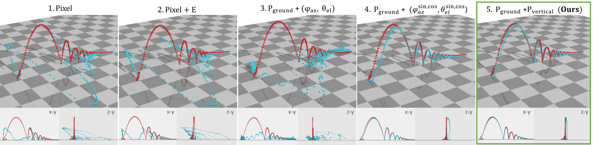
Figure 4 : Different input/output parameterization types .
图 4：不同的输入/输出参数化类型。
The predictions are in blue and ground truth in red.
预测为蓝色，真值为红色。
(y-axis points up)
（y轴指向上方）
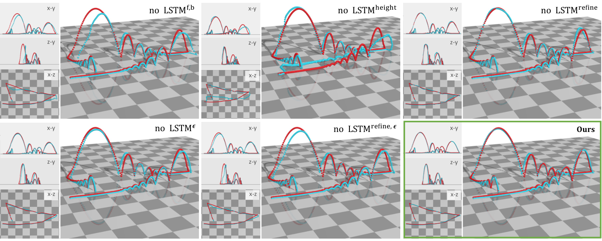
Figure 5 : LSTM ablation study .
图 5：LSTM 消融研究。
The predictions are in blue and ground truth in red.
预测为蓝色，真值为红色。
(y-axis points up, each block is 50 50 cm 2 )
（y轴指向上方，每个块为 50 50 cm 2 ）
4.3.2 Pipeline components4.3.2 流程组件
Here we ablate LSTM components to study their contributions.
在这里，我们消除了 LSTM 组件来研究它们的贡献。
We evaluate each variation on the same validation sets used in the earlier experiment and reported distance NRMSEs in Table 2 .
我们在早期实验中使用的相同验证集上评估每个变体，并在表 2 中报告距离 NRMSE。
The results show that the height and refinement networks ( , ) are especially important, and without them the errors significantly increase across all datasets.
结果表明，高度和细化网络（ 、 ）尤其重要，如果没有它们，所有数据集的误差都会显着增加。
Without the end-of-trajectory flags from , the negative effect is large on Tennis and IPL, which tend to have less predictable forces from the players.
如果没有 中的轨迹结束标志，对网球和 IPL 的负面影响很大，因为运动员的力量往往难以预测。
This suggests that the EoT flags, which mostly indicate direction changes in the motion, can be more beneficial in such scenarios.
这表明 EoT 标志（主要指示运动的方向变化）在这种情况下可能更有利。
By relying on the outputs of , can utilize information from both forward and backward directions and prove helpful in reducing NRMSEs by about 6.2 (50cm) in Mocap and 0.9 (1m) in IPL.
通过依赖 的输出， 可以利用来自前向和后向的信息，并证明有助于将 Mocap 中的 NRMSE 降低约 6.2 (50cm)，在 IPL 中降低约 0.9 (1m)。
The refinement network helps refine and smooth the trajectory output in 3D space as shown in Figure 5 .
细化网络 有助于细化和平滑 3D 空间中的轨迹输出，如图 5 所示。
We show 3D visualizations of the output on a real tennis match in Figure 6 and Appendix F .
我们在图 6 和附录 F 中展示了真实网球比赛输出的 3D 可视化。
Our pipeline can predict challenging bounces that contain multiple back-and-forth hits by the two players in a tennis game.
我们的流程可以预测具有挑战性的弹跳，其中包含网球比赛中两名球员的多次来回击球。
Table 2 : Ablation study on LSTM components .
表 2：LSTM 组件的消融研究。
We report NRMSEs using different configurations of components: (Section 3.1.2 ), , height (Section 3.1.3 ), and refine (Section 3.1.4 ).
我们使用不同的组件配置来报告 NRMSE：（第 3.1.2 节）、、高度（第 3.1.3 节）和细化（第 3.1.4 节）。
| components组件 | Synthetic合成的 | Real真实 | ||||||
| (EoT) (EoT) | height高度 | refine精炼 | Mocap动捕 | Tennis网球 | IPLIPL | Mocap动捕 | IPLIPL | |
| - | ✓ | ✓ | ✓ | 0.13 | 0.28 | 0.07 | 0.77 | 1.43 |
| ✓ | - | ✓ | ✓ | 0.06 | 0.17 | 0.11 | 0.84 | 2.23 |
| ✓ | ✓ | - | ✓ | 6.26 | 0.15 | 0.93 | 0.96 | 2.28 |
| ✓ | ✓ | ✓ | - | 0.10 | 0.18 | 0.053 | 1.13 | 1.84 |
| - | ✓ | ✓ | - | 0.11 | 0.34 | 0.13 | 0.72 | 3.41 |
| ✓ | - | ✓ | - | 0.09 | 0.17 | 1.09 | 0.87 | 3.13 |
| ✓ | ✓ | - | - | 9.61 | 0.50 | 3.43 | 3.22 | 2.01 |
| ✓ | ✓ | ✓ | ✓ | 0.05 | 0.09 | 0.01 | 0.68 | 0.74 |
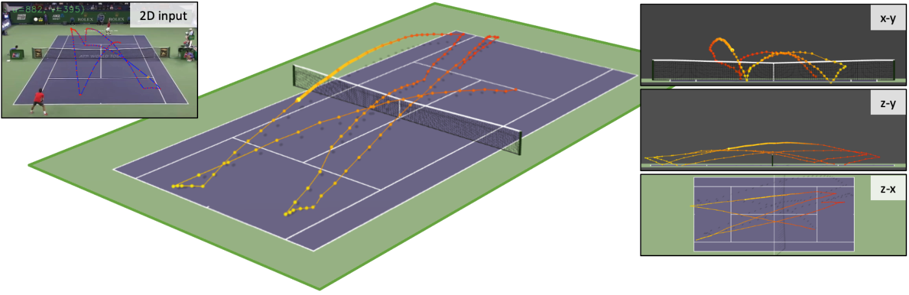
Figure 6 : From the 2D tracking of the tennis ball on the left, our method can successfully predict multiple consecutive 3D trajectories.
图 6：根据左侧网球的 2D 跟踪，我们的方法可以成功预测多个连续的 3D 轨迹。
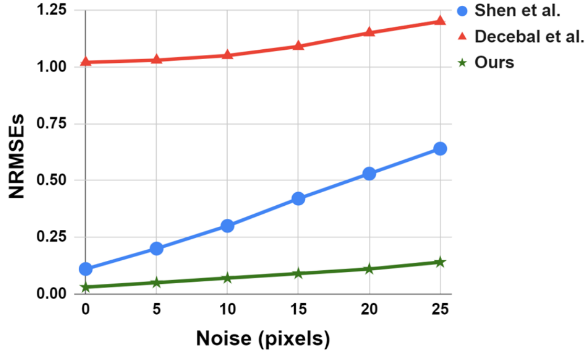
Table 3 : Comparison with prior work on the synthetic single-launch trajectory test set.
表 3：与合成单次发射轨迹测试集的先前工作进行比较。
We report NRMSEs S.E. for different levels of noise in the input 2D trajectory.
我们报告 NRMSE S.E.针对输入 2D 轨迹中不同级别的噪声。
4.3.3 Loss contributions4.3.3 损失贡献
We ablate each loss function and report the NRMSEs in Table 15 in Appendix.
我们消融每个损失函数并在附录表 15 中报告 NRMSE。
Removing and thus the EoT prediction altogether increases the NRMSEs by about 0.2 (8cm) on Synthetic tennis and 0.5 (80cm) on IPL dataset.
删除 ，因此 EoT 预测将合成网球上的 NRMSE 增加约 0.2（8 厘米），在 IPL 数据集上增加 0.5（80 厘米）。
Our simple constraint that enforces all the predictions to be above the ground also helps improve accuracy across all datasets.
我们强制所有预测都高于地面的简单约束 也有助于提高所有数据集的准确性。
Using alone performs the worst, while our full pipeline with all loss terms achieves the best performance.
单独使用 的性能最差，而我们包含所有损失项的完整流程实现了最佳性能。
4.3.4 Training / Fine-tuning on real data4.3.4 真实数据的训练/微调
We show the importance of leveraging synthetic data in Table 11 (Appendix).
我们在表 11（附录）中展示了利用合成数据的重要性。
Training on Real Mocap data achieves an NRMSE of 0.29, compared to 0.17 when trained on Synthetic, both tested on the same real test set.
使用真实 Mocap 数据进行训练时，NRMSE 为 0.29，而使用合成数据进行训练时，NRMSE 为 0.17，两者均在相同的真实测试集上进行测试。
Training on Synthetic then fine-tuning on Real achieves the best NRMSE of 0.08.
在 Synthetic 上进行训练，然后在 Real 上进行微调，达到 0.08 的最佳 NRMSE。
This shows how simulation helps alleviate problems from small and noisy training data and can be useful for both scenarios where real data is or is not available.
这表明模拟如何帮助缓解小而含噪的训练数据带来的问题，并且对于真实数据可用或不可用的两种情况都很有用。
Table 4: Comparison with SynthNet [ 11 ] on TrackNet [ 18 ]
表 4：TrackNet [18] 上与 SynthNet [11] 的比较
| TrackNet [18]轨迹网 [ 18 ] | T.acc (%)T.acc (%) | T.F1 | Landing Error (m.)着陆误差（米） | |||
|---|---|---|---|---|---|---|
| SynthNet综合网络 | Ours我们的 | SynthNet综合网络 | Ours我们的 | SynthNet综合网络 | Ours我们的 | |
| Game 1游戏1 | 86.96 | 0.873 | 0.48 | |||
| Game 2游戏2 | 96.72 | 0.905 | 0.53 | |||
| Game 3游戏3 | 96.67 | 0.952 | 0.23 | |||
| Game 4游戏4 | 73.91 | 0.714 | 0.96 | |||
| Game 5游戏5 | 84.62 | 0.841 | 0.91 | |||
| Game 6第六场比赛 | 89.74 | 0.823 | 0.73 | |||
| Game 7第七场比赛 | 75.68 | 0.547 | 0.77 | |||
| Game 8第8场比赛 | 85.42 | 0.774 | 0.90 | |||
| Game 9第9场比赛 | 89.19 | 0.803 | 0.55 | |||
| Game 10游戏10 | 93.18 | 0.841 | 0.28 | |||
| Average平均 | 87.21 | 0.807 | 0.63 | |||
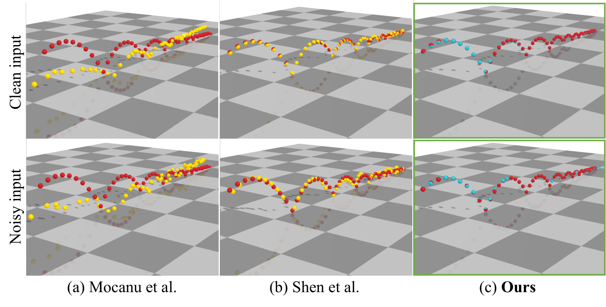
Figure 7 : Comparison with learning [ 30 ] and physics-based [ 46 ] methods.
图 7：与学习 [30] 和基于物理的 [46] 方法的比较。
We add -pixel noise to the 2D input in the bottom row.
我们将 像素噪声添加到底行的 2D 输入中。
Blue: ours.
蓝色：我们的。
Yellow: prior work.
黄色：之前的工作。
Red: ground truth.
红色：真值。
5 Limitations & Discussion5 局限性与讨论
Our method assumes the first and last frames are on the ground, which may require trimming the input sequence (e.g., starting after the first ground bounce following the serve).
该方法假设输入序列首尾两帧中的球都处于地面上，因此可能需要裁剪输入序列，例如从发球后的第一次触地反弹开始。
Despite this constraint, our method can handle any number of intermediate bounces or hits, as in back-and-forth tennis rallies (Figure 6 ).
尽管有此约束，方法仍能处理序列中任意次数的中间反弹或击球，例如网球往返回合（图 6）。
This contrasts with prior methods that require detecting all ground contact points to process each projectile separately.
相比之下，已有方法需要检测所有触地点，再逐段处理每次抛射运动。
This assumption ensures the initial height is known (zero) during the height accumulation process.
这一假设保证高度累加过程的初始高度已知，且等于零。
Rather than assuming it to be zero, predicting the initial height with a separate network is a promising direction for removing this manual step.
未来可考虑用单独的网络预测初始高度，而非将其设为零，从而取消这一人工步骤。
Our method may be affected by discrepancies between simulated and real distributions, particularly in unusual trajectories (Appendix G ).
仿真分布与真实分布的差异可能影响本方法，尤其是在不常见的轨迹上（附录 G）。
These stem partly from the simulation ignoring factors like spin, aerodynamics, and court type (e.g., grass), which affect friction and bounce.
部分差异来自仿真忽略了旋转、空气动力学及球场类型（例如草地）等影响摩擦与反弹的因素。
Incorporating these factors in future work could improve performance.
未来纳入这些因素可能改善性能。
Nonetheless, our learning-based approach remains more robust than competing methods and can handle more challenging scenarios beyond the single-launch trajectories typically tested in the literature.
尽管如此，本文的学习方法仍比对比方法更鲁棒，并能处理比文献通常测试的单次发射轨迹更复杂的场景。
In summary, we propose a method for 3D ball trajectory estimation from 2D monocular tracking.
总之，我们提出了一种从 2D 单目跟踪估计 3D 球轨迹的方法。
The key components of our learning-based pipeline are a novel 3D representation and intermediate representations that mitigate ambiguity in 3D prediction.
我们基于学习的流程的关键组成部分是新颖的 3D 表示和中间表示，可减少 3D 预测中的模糊性。
These viewpoint-independent representations make the method well-suited for broadcast videos, where common camera angles are typically used, allowing us to train our network once for reuse across multiple viewpoints.
这些与视点无关的表示使得该方法非常适合转播视频，其中通常使用常见的摄像机角度，使我们能够一次训练我们的网络以便在多个视点之间重复使用。
Extensive experiments show its effectiveness and generalization to challenging real-world scenarios, such as in sports games, despite training from simulation.
大量的实验表明，尽管是通过模拟进行训练，但其对于具有挑战性的现实场景（例如体育比赛）的有效性和泛化性。
Acknowledgement致谢
We thank Dr. Konstantinos Rematas for his valuable feedback, guidance, and assistance with revisions and figures.
我们感谢 Konstantinos Rematas 博士在修订和数据方面提供的宝贵反馈、指导和帮助。
His work [ 38 ] and earlier explorations greatly inspired us and helped shape our approach.
他的工作 [38] 和早期的探索极大地启发了我们并帮助塑造了我们的方法。
References
- [1] Hawk-Eye. https://www.hawkeyeinnovations.com/products/ball-tracking/electronic-line-calling.
- [2] Tennis game. https://github.com/sinoriani/Unity-Projects. Accessed: 2021-11-20.
- [3] Unity. https://unity.com/. Accessed: 2020-02-23.
- [4] Shariq Farooq Bhat, Ibraheem Alhashim, and Peter Wonka. Adabins: Depth estimation using adaptive bins. arXiv preprint arXiv:2011.14141, 2020.
- [5] Oliver Birbach and Udo Frese. A multiple hypothesis approach for a ball tracking system. In International Conference on Computer Vision Systems, pages 435–444. Springer, 2009.
- [6] Marcus Brubaker and David Fleet. The kneed walker for human pose tracking. pages 1 – 8, 2008.
- [7] Marcus Brubaker, David Fleet, and Aaron Hertzmann. Physics-based person tracking using the anthropomorphic walker. International Journal of Computer Vision, 87:140–155, 2010.
- [8] Jordan Calandre, Renaud Péteri, Laurent Mascarilla, and Benoit Tremblais. Extraction and analysis of 3d kinematic parameters of table tennis ball from a single camera. In ICPR 2020, 25th International Conference on Pattern Recognition (ICPR), 2021.
- [9] Hua-Tsung Chen, Ming-Chun Tien, Yi-Wen Chen, Wen-Jiin Tsai, and Suh-Yin Lee. Physics-based ball tracking and 3d trajectory reconstruction with applications to shooting location estimation in basketball video. Journal of Visual Communication and Image Representation, 20(3):204–216, 2009.
- [10] Hua-Tsung Chen, Chien-Li Chou, Wen-Jiin Tsai, and Suh-Yin Lee. 3d ball trajectory reconstruction from single-camera sports video for free viewpoint virtual replay. In 2011 Visual Communications and Image Processing (VCIP), pages 1–4. IEEE, 2011.
- [11] Morten Holck Ertner, Sofus Schou Konglevoll, Magnus Ibh, and Stella Graßhof. Synthnet: Leveraging synthetic data for 3d trajectory estimation from monocular video. In Proceedings of the 7th ACM International Workshop on Multimedia Content Analysis in Sports, pages 51–58, 2024.
- [12] Dirk Farin, Susanne Krabbe, Peter With, and Wolfgang Effelsberg. Robust camera calibration for sport videos using court models. pages 80–91, 2004.
- [13] FIFA. Fifa goal-line technology. https://inside.fifa.com/innovation/standards/goal-line-technology.
- [14] Asja Fischer and Christian Igel. Training restricted boltzmann machines: An introduction. Pattern Recognition, 47(1):25–39, 2014.
- [15] Mehran Fotouhi, Sadjad Fouladi, and Shohreh Kasaei. Projection matrix by orthogonal vanishing points. Springer, Multimedia Tools and Applications, 76(15):16189–16223, 2017.
- [16] Alex Graves. Generating sequences with recurrent neural networks. arXiv preprint arXiv:1308.0850, 2013.
- [17] Kaiming He, Xiangyu Zhang, Shaoqing Ren, and Jian Sun. Deep residual learning for image recognition. In Proceedings of the IEEE conference on computer vision and pattern recognition, pages 770–778, 2016.
- [18] YC Huang. TrackNet: Tennis ball tracking from broadcast video by deep learning networks. PhD thesis, Master’s thesis, National Chiao Tung University, Hsinchu City, Taiwan, 19 ….
- [19] Carlo Innamorati, Bryan Russell, Danny M Kaufman, and Niloy J Mitra. Neural re-simulation for generating bounces in single images. In Proceedings of the IEEE/CVF International Conference on Computer Vision, pages 8719–8728, 2019.
- [20] Intel. Intel true view. https://www.intel.com/content/www/us/en/sports/sports-overview.html.
- [21] Paresh R Kamble, Avinash G Keskar, and Kishor M Bhurchandi. A convolutional neural network based 3d ball tracking by detection in soccer videos. In Eleventh International Conference on machine vision (ICMV 2018), page 110412O. International Society for Optics and Photonics, 2019.
- [22] Joongsik Kim, Moonsoo Ra, Hongjun Lee, Jeyeon Kim, and Whoi-Yul Kim. Precise 3d baseball pitching trajectory estimation using multiple unsynchronized cameras. IEEE Access, 7:166463–166475, 2019.
- [23] Taeone Kim, Yongduek Seo, and Ki-Sang Hong. Physics-based 3d position analysis of a soccer ball from monocular image sequences. In Sixth International Conference on Computer Vision (IEEE Cat. No. 98CH36271), pages 721–726. IEEE, 1998.
- [24] Diederik P Kingma and Jimmy Ba. Adam: A method for stochastic optimization. arXiv preprint arXiv:1412.6980, 2014.
- [25] Anil Kumar, P Shashidhar Chavan, VK Sharatchandra, Sumam David, Philip Kelly, and Noel E O’Connor. 3d estimation and visualization of motion in a multicamera network for sports. In 2011 Irish Machine Vision and Image Processing Conference, pages 15–19. IEEE, 2011.
- [26] Jessica Hodgins Libin Liu. Learning basketball dribbling skills using trajectory optimization and deep reinforcement learning. ACM Transactions on Graphics, 37(4), August 2018.
- [27] Jianran Liu, Zaojun Fang, Kun Zhang, and Min Tan. Improved high-speed vision system for table tennis robot. In 2014 IEEE International Conference on Mechatronics and Automation, pages 652–657. IEEE, 2014.
- [28] Jürgen Metzler and Frank Pagel. 3d trajectory reconstruction of the soccer ball for single static camera systems. In MVA, pages 121–124, 2013.
- [29] Shogo Miyata, Hideo Saito, Kosuke Takahashi, Dan Mikami, Mariko Isogawa, and Hideaki Kimata. Ball 3d trajectory reconstruction without preliminary temporal and geometrical camera calibration. In Proceedings of the IEEE Conference on Computer Vision and Pattern Recognition Workshops, pages 108–113, 2017.
- [30] Decebal Constantin Mocanu, Haitham Bou Ammar, Luis Puig, Eric Eaton, and Antonio Liotta. Estimating 3d trajectories from 2d projections via disjunctive factored four-way conditional restricted boltzmann machines. Pattern Recognition, 69:325–335, 2017.
- [31] Aron Monszpart, Nils Thuerey, and Niloy J. Mitra. SMASH: Physics-guided Reconstruction of Collisions from Videos. ACM Trans. Graph. (SIGGRAPH Asia), 35(6):199:1–199:14, 2016.
- [32] Roozbeh Mottaghi, Hessam Bagherinezhad, Mohammad Rastegari, and Ali Farhadi. Newtonian scene understanding: Unfolding the dynamics of objects in static images. In Proceedings of the IEEE Conference on Computer Vision and Pattern Recognition, pages 3521–3529, 2016.
- [33] Iason Oikonomidis Nikolaos Kyriazis and Antonis Argyros. Binding computer vision to physics based simulation: The case study of a bouncing ball. In Proceedings of the British Machine Vision Conference, pages 43.1–43.11. BMVA Press, 2011. http://dx.doi.org/10.5244/C.25.43.
- [34] Yoshinori Ohno, Jun Miura, and Yoshiaki Shirai. Tracking players and estimation of the 3d position of a ball in soccer games. In Proceedings 15th International Conference on Pattern Recognition. ICPR-2000, pages 145–148. IEEE, 2000.
- [35] Hyun Soo Park, Takaaki Shiratori, Iain Matthews, and Yaser Sheikh. 3d trajectory reconstruction under perspective projection. International Journal of Computer Vision, 115(2):115–135, 2015.
- [36] Senthil Purushwalkam, Abhinav Gupta, Danny M. Kaufman, and Bryan Russell. Bounce and learn: Modeling scene dynamics with real-world bounces, 2019.
- [37] Ian Reid and A North. 3d trajectories from a single viewpoint using shadows. In BMVC, pages 51–52, 1998.
- [38] Konstantinos Rematas, Ira Kemelmacher-Shlizerman, Brian Curless, and Steve Seitz. Soccer on your tabletop. In Proceedings of the IEEE Conference on Computer Vision and Pattern Recognition, pages 4738–4747, 2018.
- [39] Davis Rempe, Leonidas J. Guibas, Aaron Hertzmann, Bryan Russell, Ruben Villegas, and Jimei Yang. Contact and human dynamics from monocular video. In Proceedings of the European Conference on Computer Vision (ECCV), 2020.
- [40] Jinchang Ren, James Orwell, Graeme A Jones, and Ming Xu. A general framework for 3d soccer ball estimation and tracking. In 2004 International Conference on Image Processing, 2004. ICIP’04., pages 1935–1938. IEEE, 2004.
- [41] Jinchang Ren, Ming Xu, James Orwell, and Graeme A Jones. Multi-camera video surveillance for real-time analysis and reconstruction of soccer games. Machine Vision and Applications, 21(6):855–863, 2010.
- [42] Evan Ribnick, Stefan Atev, and Nikolaos P Papanikolopoulos. Estimating 3d positions and velocities of projectiles from monocular views. IEEE transactions on pattern analysis and machine intelligence, 31(5):938–944, 2008.
- [43] Enrique Romero, Ferran Mazzanti, Jordi Delgado, and David Buchaca. Weighted contrastive divergence. Neural Networks, 114:147–156, 2019.
- [44] Denys Rozumnyi, Martin R Oswald, Vittorio Ferrari, and Marc Pollefeys. Shape from blur: Recovering textured 3d shape and motion of fast moving objects. Advances in Neural Information Processing Systems, 34:29972–29983, 2021.
- [45] Denys Rozumnyi, Martin R Oswald, Vittorio Ferrari, and Marc Pollefeys. Motion-from-blur: 3d shape and motion estimation of motion-blurred objects in videos. In Proceedings of the IEEE/CVF Conference on Computer Vision and Pattern Recognition, pages 15990–15999, 2022.
- [46] Lejun Shen, Qing Liu, Lin Li, and Haipeng Yue. 3d reconstruction of ball trajectory from a single camera in the ball game. In Proceedings of the 10th International Symposium on Computer Science in Sports (ISCSS), pages 33–39. Springer, 2016.
- [47] Second Spectrum. Second spectrum. https://www.secondspectrum.com/press/2020-09-10.html.
- [48] Marek Vondrak, Leonid Sigal, and Odest Chadwicke Jenkins. Physical simulation for probabilistic motion tracking. In 2008 IEEE Conference on Computer Vision and Pattern Recognition, pages 1–8, 2008.
- [49] Ronald J Williams and David Zipser. A learning algorithm for continually running fully recurrent neural networks. Neural computation, 1(2):270–280, 1989.
- [50] Akihito Yamada, Yoshiaki Shirai, and Jun Miura. Tracking players and a ball in video image sequence and estimating camera parameters for 3d interpretation of soccer games. In Object recognition supported by user interaction for service robots, pages 303–306. IEEE, 2002.
- [51] Mo Yu, Wenpeng Yin, Kazi Saidul Hasan, Cicero dos Santos, Bing Xiang, and Bowen Zhou. Improved neural relation detection for knowledge base question answering. arXiv preprint arXiv:1704.06194, 2017.
- [52] Zhengtao Zhang, De Xu, and Min Tan. Visual measurement and prediction of ball trajectory for table tennis robot. IEEE Transactions on Instrumentation and Measurement, 59(12):3195–3205, 2010.
- [53] Yixin Zhu, Yibiao Zhao, and Song-Chun Zhu. Understanding tools: Task-oriented object modeling, learning and recognition. 2015 IEEE Conference on Computer Vision and Pattern Recognition (CVPR), pages 2855–2864, 2015.
- [54] Yixin Zhu, Chenfanfu Jiang, Yibiao Zhao, Demetri Terzopoulos, and Song Zhu. Inferring forces and learning human utilities from videos. pages 3823–3833, 2016.
Appendix: Where Is The Ball: 3D Ball Trajectory Estimation From 2D Monocular Tracking
附录：球在哪里：根据 2D 单目跟踪估计 3D 球轨迹
Appendix A Overview附录 A 概述
In this Appendix, we present:
在本附录中，我们介绍：
- •
Section B : Simulation details.
B 部分：模拟细节。
- •
Section C : Dataset details.
C 部分：数据集详细信息。
- •
Section D : Implementation details and network architectures.
D 部分：实施细节和网络架构。
- •
Section E : Runtime.
E 部分：运行时。
- •
Section F : Additional results.
F 部分：附加结果。
- •
Section G : Failure cases.
G 部分：失败案例。
Appendix B Simulation details附录 B 模拟详细信息
We used Unity (v2019.3.2f1) with PhysX engine (v3.3) to simulate ball trajectories.
我们使用 Unity (v2019.3.2f1) 和 PhysX 引擎 (v3.3) 来模拟球轨迹。
The ground plane was created using a box collider object, and its center position was set to the origin.
地平面是使用盒式碰撞器对象创建的，其中心位置设置为原点。
We used a sphere collider object with the property “rigid” for the ball.
我们使用了球体碰撞器对象，球的属性为“刚性”。
The camera parameters were manually set based on real-world parameters (estimated from three real datasets).
相机参数是根据真实世界参数（根据三个真实数据集估计）手动设置的。
For all simulations, we take into account the ball’s size, weight, and a plausible range of ball speeds (by varying the applied force).
对于所有模拟，我们都会考虑球的大小、重量和球速的合理范围（通过改变施加的力）。
Other factors, such as ball spin, aerodynamics, and court type (e.g., grass), are not considered in the current setup but could be incorporated in future work to enhance realism of the simulation, as they influence friction and bounce behavior.
当前设置中未考虑其他因素，例如球旋转、空气动力学和球场类型（例如草地），但可以将其纳入未来的工作中，以增强模拟的真实感，因为它们会影响摩擦和弹跳行为。
B.1 Mocap and IPLB.1 动作捕捉和 IPL
To simulate a bouncing ball with multiple trajectories, we applied an impulse force at the beginning and let the ball bounce until its velocity dropped below a threshold, indicating that it had nearly stopped moving, before applying a new force.
为了模拟具有多个轨迹的弹跳球，我们在开始时施加脉冲力，让球弹跳，直到其速度降至阈值以下，表明它几乎停止移动，然后再施加新的力。
These forces had random magnitudes, and their directions were randomly generated so that projectile motions and rolling motions on the ground occurred with an equal chance.
这些力的大小是随机的，方向是随机生成的，因此地面上的抛射运动和滚动运动发生的机会是相等的。
Note that projectile motions are generated using forces with positive y components, assuming y+ points upward, and rolling motions using forces with zero y component.
请注意，假设 y+ 指向上方，则使用具有正 y 分量的力生成抛射运动，并使用具有零 y 分量的力生成滚动运动。
The end-of-trajectory flag was only set true at the time step right before each force was being applied.
轨迹结束标志仅在施加每个力之前的时间步处设置为真。
The simulation of Mocap and IPL in Unity Game Engine is shown in Figure 8 .
Unity Game Engine中Mocap和IPL的模拟如图8所示。
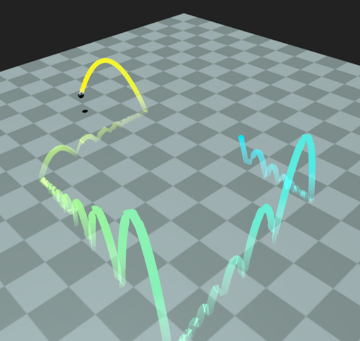
Figure 8 : Unity Game Engine for Mocap, IPL and Simpler synthetic datasets.
图 8：用于 Mocap、IPL 和 Simpler 合成数据集的 Unity 游戏引擎。
B.2 TennisB.2 网球
To simulate tennis shots, we built upon an open-source tennis game [ 2 ] and made the gameplay between two computer-bot players for the ease of data collection.
为了模拟网球击球，我们以开源网球游戏 [2] 为基础，并在两个计算机机器人球员之间进行游戏，以便于数据收集。
Each bot has 2 actions: hit and receive.
每个机器人都有 2 个动作：击打和接收。
The hitter bot will randomly pick a location on the opponent’s side for the ball to land and make a hit with random angles between 10-20 degrees (creating a lob shot or a flat shot).
击球手机器人将随机选择对手一侧的位置供球落地，并以 10-20 度之间的随机角度进行击球（创建高球击球或平击球）。
Then, the receiver bot will receive the ball behind the landing position with an offset of 5-7 meters away and subsequently becomes the hitter, and vice versa.
然后，接球手机器人将在落地位置后面偏移 5-7 米处接球，随后成为击球手，反之亦然。
The end-of-trajectory flag was only set true at the time step right before the bots make a hit.
轨迹结束标志仅在机器人命中之前的时间步处设置为真。
Additionally, the net was created using a box collider object for filtering out trajectories that are not passing over the net.
此外，网络是使用盒式碰撞器对象创建的，用于过滤掉未通过网络的轨迹。
The tennis simulation in Unity Game Engine is shown in Figure 9 .
Unity Game Engine 中的网球模拟如图 9 所示。
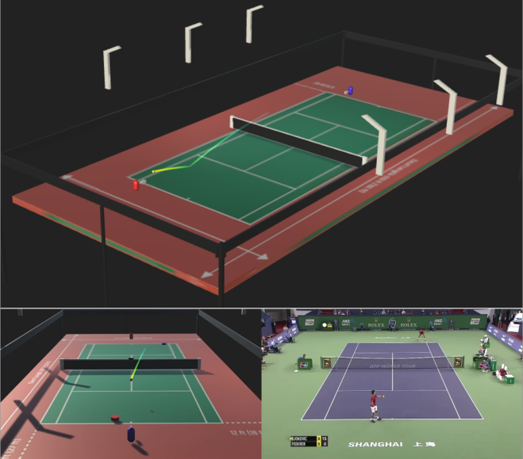
Figure 9 : Unity Game Engine for Tennis.
图 9：Unity 网球游戏引擎。
B.3 Synthetic Single-Launch Trajectory DatasetB.3 合成单次发射轨迹数据集
For comparison with Mocanu et al. [ 30 ] and Shen et al. [ 46 ] , we matched their input assumptions (single force / single trajectory) and simulated single-trajectory sequences by launching the ball from the origin into a random direction in the first quadrant (0-90 degrees).
与 Mocanu 等人进行比较。 [30] 和沉等人。 [46]，我们匹配他们的输入假设（单力/单轨迹）并通过将球从原点发射到第一象限（0-90度）的随机方向来模拟单轨迹序列。
Other configurations are similar to those used in Mocap and IPL.
其他配置与 Mocap 和 IPL 中使用的配置类似。
Appendix C Dataset details附录 C 数据集详细信息
In this section, we explain details of our synthetic datasets and real datasets.
在本节中，我们将解释合成数据集和真实数据集的详细信息。
For synthetic datasets, the train, validation and test sets consist of 5000, 1500 and 500 sequences.
对于合成数据集，训练集、验证集和测试集由 5000、1500 和 500 个序列组成。
C.1 Synthetic MocapC.1 合成动捕
In this dataset, the sequence length varies between 85-2,873 time steps with an average of 460 time steps.
在此数据集中，序列长度在 85-2,873 个时间步长之间变化，平均为 460 个时间步长。
The space for the ball to travel is about with the maximum height of 1.58m.
球的行进空间约为，最大高度为1.58m。
Each sequence in the train set contains two consecutive trajectories, whereas in the validation and test sets, each sequence contains 1-7 consecutive trajectories.
训练集中的每个序列包含两个连续的轨迹，而在验证和测试集中，每个序列包含 1-7 个连续的轨迹。
C.2 Synthetic IPLC.2 合成IPL
In this dataset, the sequence length varies between 37-949 time steps with an average of 104 time steps.
在此数据集中，序列长度在 37-949 个时间步长之间变化，平均为 104 个时间步长。
The space for the ball to travel is about with the maximum height of 10.42m.
球的行进空间约为，最大高度为10.42m。
Similar to Synthetic Mocap, each sequence in the train set contains two consecutive trajectories, while in the validation and test sets, 1-7 consecutive trajectories.
与 Synthetic Mocap 类似，训练集中的每个序列包含两个连续的轨迹，而在验证和测试集中，则包含 1-7 个连续的轨迹。
C.3 Synthetic Tracknet (Tennis)C.3 合成TrackNet（网球）
In this dataset, the sequence length varies between 64-822 time steps with an average of 122 time steps.
在此数据集中，序列长度在 64-822 个时间步长之间变化，平均为 122 个时间步长。
The space for the ball to travel is about with the maximum height of 3.87m.
球的行进空间约为，最大高度为3.87m。
All sequences in train, validation, and test sets contain 3 strokes.
训练、验证和测试集中的所有序列都包含 3 个笔画。
C.4 Synthetic Single-Launch Trajectory DatasetC.4 合成单次发射轨迹数据集
This synthetic dataset for state-of-the-art comparison with Mocanu et al. [ 30 ] and Shen et al. [ 46 ] has 300, 100 and 100 sequences for train, validation and test set.
该合成数据集用于与 Mocanu 等人进行最先进的比较。 [30] 和沉等人。 [46]有 300、100 和 100 个序列用于训练、验证和测试集。
This dataset has the minimum and maximum sequence lengths of 46 and 106 time steps.
该数据集的最小和最大序列长度分别为 46 和 106 个时间步长。
The average sequence length of trajectories is 74 time steps.
轨迹的平均序列长度为 74 个时间步长。
The space for the ball to travel is about with the maximum height of 0.77m.
球的行进空间约为，最大高度为0.77m。
C.5 Real IPLC.5 真实 IPL
IPL soccer ball detection dataset [ 15 ] contains short video streams of a real soccer match from 6 synchronized cameras at 25fps.
IPL 足球检测数据集 [15] 包含来自 6 个同步摄像机的 25fps 真实足球比赛的短视频流。
The 2D ball tracking sequences are provided, and we followed the camera pose estimation pipeline in [ 38 ] to estimate the 3D ball positions used as ground truth.
提供了 2D 球跟踪序列，我们按照[38]中的相机姿态估计流程来估计用作真值的 3D 球位置。
In this dataset, the 2D track points are sometimes missing for a few frames, e.g., due to occlusion.
在此数据集中，有时会由于遮挡等原因丢失几帧的 2D 跟踪点。
We describe our method to fill in these missing data in section D.1 .
我们在 D.1 节中描述了填充这些缺失数据的方法。
Then, we used the completed trajectories as input to our model.
然后，我们使用完整的轨迹作为模型的输入。
There is a total of 9 remaining sequences that were successfully calibrated from the above process and satisfied our assumption that the ball starts and ends on the ground.
通过上述过程，总共有 9 个剩余序列已成功校准，并满足我们假设球在地面上开始和结束的假设。
The minimum and maximum sequence lengths are 18 and 147 and the average is 68 time steps.
最小和最大序列长度分别为 18 和 147，平均值为 68 个时间步长。
The ball travels within a space of size with the maximum height of m.
球在尺寸为 的空间内行进，最大高度为 米。
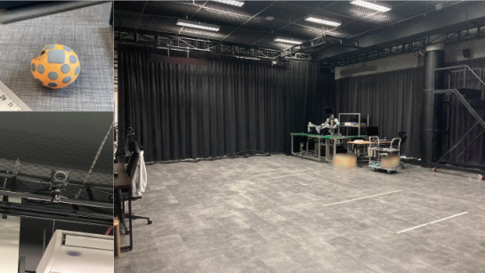
Figure 10 : Motion capture studio.
图 10：动作捕捉工作室。
The top left is a ping-pong ball attached with IR reflective materials.
左上方是一个贴有红外反射材料的乒乓球。
The right image is our motion capture studio used to collect data.
右图是我们用来收集数据的动作捕捉工作室。
The bottom left is one of the eight IR cameras used in the studio.
左下角是工作室使用的八个红外摄像机之一。
C.6 Real MocapC.6 真实动捕
This dataset captures the bouncing motion of a ping pong ball in a motion capture studio shown in Figure 10 .
该数据集在运动捕捉工作室中捕捉乒乓球的弹跳运动，如图 10 所示。
This system uses 8 synchronized IR cameras to track IR reflective stickers that were attached on the ping-pong ball with a 40mm diameter.
该系统使用 8 个同步红外摄像机来跟踪贴在直径 40 毫米的乒乓球上的红外反射贴纸。
The camera frame rate was set to 50fps.
相机帧速率设置为 50fps。
The Mocap system provided the 3D positions of the ping-pong ball with a 2D tracking sequence from each camera with known parameters.
Mocap 系统通过每个具有已知参数的摄像机的 2D 跟踪序列提供乒乓球的 3D 位置。
We used all cameras with their 2D tracking sequences as input to our method for evaluation.
我们使用所有摄像机及其 2D 跟踪序列作为我们评估方法的输入。
We generated bouncing motions by throwing the ball upward within this space and kept re-throwing whenever the ball stopped moving from that last spot.
我们通过在这个空间内向上投掷球来产生弹跳运动，并在球从最后一个位置停止移动时不断重新投掷。
This dataset contains 344 different trajectories, and the maximum number of consecutive trajectories is 3.
该数据集包含 344 条不同的轨迹，连续轨迹的最大数量为 3。
The minimum and maximum sequence lengths are 150 and 907 and the average is 301 time steps.
最小和最大序列长度分别为 150 和 907，平均值为 301 时间步长。
The space for the ball to travel is about and the maximum height is 1.49m.
球的行进空间约为，最大高度为1.49m。
C.7 Real Tracknet (Tennis)C.7 真实TrackNet（网球）
This dataset [ 18 ] contains 81 video clips of 10 tennis matches captured from a 30FPS broadcast camera.
该数据集 [18] 包含从 30FPS 广播摄像机捕获的 10 场网球比赛的 81 个视频剪辑。
The 2D ball tracking annotations are also provided.
还提供了 2D 球跟踪标注。
We qualitatively evaluate our performance on 118 trajectories from 13 clips in one match.
我们定性评估一场比赛中 13 个片段的 118 条轨迹的表现。
The minimum and maximum sequence lengths are 18 and 288, and the average is 92 time steps.
最小和最大序列长度分别为 18 和 288，平均值为 92 个时间步长。
Each sequence has a varying number of strokes between 1 to 10 (with an average of 3 strokes) and the tennis ball bounces 9 times at most (with an average of 4 bounces).
每个序列的击球次数在 1 到 10 之间（平均 3 次击球），网球最多弹跳 9 次（平均弹跳 4 次）。
Appendix D Implementation details / Network architectures附录 D 实现细节/网络架构
For training, we set and trained our networks for 1,400 epochs using Adam optimizer [ 24 ] with a constant learning rate of 0.001 and a batch size of 256.
对于训练，我们设置 并使用 Adam 优化器 [24] 以 0.001 的恒定学习率和 256 的批量大小训练我们的网络 1,400 个时期。
We trained our LSTMs with backpropagation through time.
我们通过时间反向传播来训练 LSTM。
Note that our trained pipeline can still predict output sequences of arbitrary lengths.
请注意，我们经过训练的流程仍然可以预测任意长度的输出序列。
We also randomly add a Gaussian noise to each 2D input location ( ) to simulate noisy 2D tracking from a tracking algorithm or human labels.
我们还随机向每个 2D 输入位置 () 添加高斯噪声，以模拟来自跟踪算法或人类标签的噪声 2D 跟踪。
Results for different levels of noise are reported in the main paper in Table 5 .
表 5 中的主要论文报告了不同噪声水平的结果。
Next, we explain the network architectures of:
接下来我们解释一下网络架构：
- 1.
EoT prediction network ( ) in Table 5 .
EoT预测网络（）见表5。
- 2.
Height prediction network ( and ) in Table 6 , 7 .
高度预测网络（和）见表6、7。
- 3.
Refinement network ( in Table 8 .
细化网络（表 8 中的。
Note that in these tables, B is the batch size, L is the sequence length, and all LeakyReLUs use 0.01 slope.
请注意，在这些表中，B 是批量大小，L 是序列长度，所有 LeakyReLU 都使用 0.01 斜率。
Table 5 : Network architecture of the EoT prediction network ( ).
表 5：EoT 预测网络的网络架构（）。
| Layer图层 | Activation激活 | Output size输出尺寸 | ||
| Input输入 | - | B x L x 4宽×长×4 | ||
| BiLSTM.0BiLSTM.0 | - | B x L x 2 x 64宽×长×2×64 | ||
|
- | B x L x 2 x 64宽×长×2×64 | ||
|
- | B x L x 2 x 64宽×长×2×64 | ||
| Concat康卡特 | - | B x L x 128宽×长×128 | ||
| FC.0 | Leaky ReLU泄漏ReLU | B x L x 32宽×长×32 | ||
| FC.1 | Leaky ReLU泄漏ReLU | B x L x 32宽×长×32 | ||
| FC.2 | Leaky ReLU泄漏ReLU | B x L x 32宽×长×32 | ||
| FC.3 | Sigmoid乙状结肠 | B x L x 1宽×长×1 |
Table 6 : Network architecture of the in height prediction network.
表 6：高度预测网络中 的网络架构。
Note that we use the same architecture for both the forward and backward directions.
请注意，我们对前向和后向使用相同的架构。
| Layer图层 | Activation激活 | Output size输出尺寸 | |
| Input输入 | - | B x L x 6宽×长×6 | |
| LSTM.0LSTM.0 | - | B x L x 1 x 64宽×长×1×64 | |
|
- | B x L x 1 x 64宽×长×1×64 | |
|
- | B x L x 1 x 64宽×长×1×64 | |
| Concat康卡特 | - | B x L x 64宽×长×64 | |
| FC.0 | Leaky ReLU泄漏ReLU | B x L x 32宽×长×32 | |
| FC.1 | Leaky ReLU泄漏ReLU | B x L x 32宽×长×32 | |
| FC.2 | Leaky ReLU泄漏ReLU | B x L x 32宽×长×32 | |
| FC.3 | - | B x L x 1宽×长×1 |
Table 7 : Network architecture of the in height prediction network.
表 7：高度预测网络中 的网络架构。
| Layer图层 | Activation激活 | Output size输出尺寸 | ||
| Input输入 | - | B x L x 5宽×长×5 | ||
| BiLSTM.0BiLSTM.0 | - | B x L x 2 x 64宽×长×2×64 | ||
|
- | B x L x 2 x 64宽×长×2×64 | ||
|
- | B x L x 2 x 64宽×长×2×64 | ||
| Concat康卡特 | - | B x L x 128宽×长×128 | ||
| FC.0 | Leaky ReLU泄漏ReLU | B x L x 32宽×长×32 | ||
| FC.1 | Leaky ReLU泄漏ReLU | B x L x 32宽×长×32 | ||
| FC.2 | Leaky ReLU泄漏ReLU | B x L x 32宽×长×32 | ||
| FC.3 | - | B x L x 1宽×长×1 |
Table 8 : Network architecture of the refinement network.
表 8：细化网络的网络架构。
| Layer图层 | Activation激活 | Output size输出尺寸 | ||
| Input输入 | - | B x L x 7宽×长×7 | ||
| BiLSTM.0BiLSTM.0 | - | B x L x 2 x 64宽×长×2×64 | ||
|
- | B x L x 2 x 64宽×长×2×64 | ||
|
- | B x L x 2 x 64宽×长×2×64 | ||
| Concat康卡特 | - | B x L x 128宽×长×128 | ||
| FC.0 | Leaky ReLU泄漏ReLU | B x L x 32宽×长×32 | ||
| FC.1 | Leaky ReLU泄漏ReLU | B x L x 32宽×长×32 | ||
| FC.2 | Leaky ReLU泄漏ReLU | B x L x 32宽×长×32 | ||
| FC.3 | - | B x L x 3宽×长×3 |
D.1 Filling in missing track points (IPL dataset)D.1 填充缺失轨迹点（IPL 数据集）
In IPL dataset [ 15 ] , there are missing data points in some time steps in the 2D tracking sequences.
在IPL数据集[15]中，2D跟踪序列中的某些时间步长存在缺失数据点。
We solve this problem with an additional pre-processing step that fills in the missing points before using the completed sequence as input to our main pipeline and other competing techniques.
我们通过额外的预处理步骤来解决这个问题，该步骤在使用完整的序列作为我们的主流程和其他竞争技术的输入之前填充缺失的点。
In particular, we trained an auto-regressive network also based on LSTMs that takes as input the temporal difference of 2D pixel coordinates and predicts the difference for the next time step , following [ 16 ] .
特别是，我们训练了一个同样基于 LSTM 的自回归网络，该网络将 2D 像素坐标 的时间差异作为输入，并预测下一个时间步骤 的差异，遵循 [16]。
This network consists of 2 independent directional-LSTMs that auto-regress the sequence in the forward and backward directions shown in Table 9 .
该网络由 2 个独立的定向 LSTM 组成，它们在向前和向后方向上自动回归序列，如表 9 所示。
The resulting two predicted sequences are combined with linear ramp weighting similar to Eq. 3 in the main paper, to output the final 2D tracking sequence.
由此产生的两个预测序列与类似于方程式的线性斜坡加权相结合。主要论文中的3，输出最终的2D跟踪序列。
Note that if a tracking data point is available for the current time step, we simply use it.
请注意，如果跟踪数据点可用于当前时间步，我们只需使用它。
We trained this network with the teacher forcing technique [ 49 ] .
我们使用教师强制技术来训练这个网络[49]。
Table 9 : Network architecture of the auto-regressive model for interpolating missing data points.
表 9：用于插入缺失数据点的自回归模型的网络架构。
Note that we used the same architecture for both forward and backward directions.
请注意，我们对前向和后向使用相同的架构。
| Layer图层 | Activation激活 | Output size输出尺寸 | ||
| Input输入 | - | B x L x 2宽×长×2 | ||
| LSTM.0LSTM.0 | - | B x L x 64宽×长×64 | ||
|
- | B x L x 64宽×长×64 | ||
|
- | B x L x 64宽×长×64 | ||
|
- | B x L x 64宽×长×64 | ||
| FC.0 | Leaky ReLU泄漏ReLU | B x L x 64宽×长×64 | ||
| FC.1 | Leaky ReLU泄漏ReLU | B x L x 32宽×长×32 | ||
| FC.2 | Leaky ReLU泄漏ReLU | B x L x 16宽×长×16 | ||
| FC.3 | Leaky ReLU泄漏ReLU | B x L x 8宽×长×8 | ||
| FC.4 | Leaky ReLU泄漏ReLU | B x L x 4宽×长×4 | ||
| FC.5 | - | B x L x 2宽×长×2 |
Appendix E Runtime附录 E 运行时
We measured runtime on the test set of Simpler Synthetic dataset (Appendix C.4 ), which contains 100 trajectories (7,463 timesteps in total).
我们在 Simpler Synthetic 数据集（附录 C.4）的测试集上测量了运行时间，该数据集包含 100 个轨迹（总共 7,463 个时间步）。
We tested our method and other competing techniques on 100 trajectories for 100 times (10,000 sequences) on a desktop with AMD Ryzen 9 3900X and a single NVIDIA 2080 super.
我们在配备 AMD Ryzen 9 3900X 和单个 NVIDIA 2080 super 的台式机上在 100 个轨迹上测试了我们的方法和其他竞争技术 100 次（10,000 个序列）。
Our method took an average of ms per frame, which is about faster than the other learning-based Mocanu et al. [ 30 ] ( ms).
我们的方法每帧平均花费 毫秒，比其他基于学习的 Mocanu 等人大约快 秒。 [ 30 ]（ 毫秒）。
The physics-based method, Shen et al. [ 46 ] , only requires optimization and is the fastest with an average runtime of ms per frame.
基于物理的方法，Shen 等人。 [ 46 ] ，只需要优化，并且是最快的，每帧平均运行时间为 毫秒。
Appendix F Additional results附录 F 附加结果
In this section, we provide an additional prior work comparison on two real datasets, additional error metrics, as well as additional qualitative results for three real and three synthetic datasets.
在本节中，我们提供了对两个真实数据集的额外先前工作比较、额外的误差指标以及三个真实数据集和三个合成数据集的额外定性结果。
F.1 Comparison with prior work on Real Mocap and Real IPLF.1 与 Real Mocap 和 Real IPL 先前工作的比较
We compare our method to the same state-of-the-art methods [ 30 , 46 ] used in Section 4.2 of the main paper, but each test example in this experiment contains multiple trajectories due to multiple acting forces (e.g., tennis hits).
我们将我们的方法与主论文第 4.2 节中使用的相同最先进方法 [30, 46] 进行比较，但本实验中的每个测试示例都包含由于多个作用力（例如网球击球）而产生的多个轨迹。
Note again that these prior methods are not designed for multiple trajectories, but we include this experiment for completeness.
再次注意，这些先前的方法并不是为多轨迹设计的，但为了完整性，我们包含了这个实验。
We performed a fair comparison using a single-launch trajectory test set in Section 4.2.
我们使用 4.2 节中的单次发射轨迹测试集进行了公平的比较。
Table 11 reports distance NRMSEs on the test sets of Real Mocap and IPL datasets.
表 11 报告了 Real Mocap 和 IPL 数据集测试集上的距离 NRMSE。
Our method achieves significantly better NRMSEs with performance gaps of up to 75.4 in Mocap and 13.6 in IPL, but this is expected as these test scenarios violate their assumptions.
我们的方法实现了明显更好的 NRMSE，在 Mocap 中性能差距高达 75.4，在 IPL 中性能差距高达 13.6，但这是预期的，因为这些测试场景违反了他们的假设。
F.2 Results using other NRMSE variantsF.2 使用其他 NRMSE 变体的结果
Table 12 reports different variants of NRMSEs, which are RMSEs divided by the trajectory height, area’s length, area’s width, or the distance to camera, following [ 8 ] .
表 12 报告了 NRMSE 的不同变体，即 RMSE 除以轨迹高度、区域长度、区域宽度或到摄像机的距离，如下 [8]。
Here the length and width are the field dimensions (e.g., tennis court ( ) or soccer pitch ( ).
这里的长度和宽度是场地尺寸（例如，网球场 ( ) 或足球场 ( )。
We report NRMSEs for distance , based on the L2 distance on the xyz coordinates, and height , based on the distance along the y coordinate only.
我们根据 xyz 坐标上的 L2 距离报告距离 的 NRMSE，并仅根据沿 y 坐标的距离报告高度的 NRMSE。
Since our method may exhibit errors relative to the size of the playing area, these metrics are important for assessing our performance for different applications or different world scales.
由于我们的方法可能会出现相对于游戏区域大小的误差，因此这些指标对于评估我们在不同应用程序或不同世界范围内的性能非常重要。
For example, when visualizing the soccer ball in the entire soccer field, errors with respect to the area’s length or width may be appropriate.
例如，当在整个足球场中可视化足球时，关于该区域的长度或宽度的误差可能是适当的。
For Real Mocap, we achieve a 0.48% distance NRMSE with respect to both the area’s length and width.
对于 Real Mocap，我们在区域的长度和宽度方面实现了 0.48% 的距离 NRMSE。
For IPL, the errors are 1.13% and 1.71% with respect to the soccer pitch’s dimensions, or 1.13% with respect to the camera distance, which is about 106m away from the soccer pitch.
对于 IPL，相对于足球场尺寸的误差为 1.13% 和 1.71%，相对于摄像机距离的误差为 1.13%（距足球场约 106m）。
F.3 Other quantitative metricsF.3 其他定量指标
We show quantitative results from all experiments and ablation studies in RMSEs (in centimeters) in Table 13 - 17 .
我们在表 13-17 中显示了所有实验和消融研究的均方根误差（以厘米为单位）的定量结果。
Additionally, we report the statistics of ground penetration in the predicted trajectories on Real Tracknet in Table 18 .
此外，我们在表 18 中报告了 Real Tracknet 上预测轨迹的地面穿透统计数据。
Table 10 : Comparison with prior work on Real Mocap and Real IPL.
表 10：与 Real Mocap 和 Real IPL 先前工作的比较。
The numbers are NRMSEs.
这些数字是 NRMSE。
Note that each test example in these datasets contains multiple trajectories, which are outside prior work’s assumptions.
请注意，这些数据集中的每个测试示例都包含多个轨迹，这些轨迹超出了先前工作的假设。
Table 11 : How helpful is simulated data?
表 11：模拟数据有多大帮助？
We report NRMSEs S.E. of training on Real and Synthetic Mocap, as well as on Synthetic then fine-tuning on Real.
我们报告 NRMSE S.E.真实和合成动作捕捉的训练，以及合成然后在真实上的微调。
Using Synthetic for training or pre-training outperforms training on Real alone.
使用 Synthetic 进行训练或预训练优于单独使用 Real 进行训练。
| Training data训练数据 | Distance距离 | Height身高 |
|---|---|---|
| Real Mocap真实动捕 | ||
| Synthetic Mocap合成动捕 | ||
| Synthetic + Real (Fine-tuned)合成+真实（微调） |
Table 12 : We report NRMSEs with respect to the trajectory height, area’s length, area’s width, and distance to camera, following Calendre et al. [ 8 ] . *Each row shaded in gray shows the denominators (meter) used to compute each normalized RMSE.
表 12：我们根据 Calendre 等人的研究，报告了关于轨迹高度、区域长度、区域宽度和到摄像机的距离的 NRMSE。 [8]。 *每行灰色阴影显示用于计算每个标准化 RMSE 的分母（米）。
| Metric公制 | Synthetic合成的 | Real真实 | ||||||||
|---|---|---|---|---|---|---|---|---|---|---|
| Mocap动捕 | Tennis网球 | IPLIPL | Mocap动捕 | IPLIPL | ||||||
| Distance距离 | Height身高 | Distance距离 | Height身高 | Distance距离 | Height身高 | Distance距离 | Height身高 | Distance距离 | Height身高 | |
| RMSE (cm)均方根误差（厘米） | 1.33 | 0.48 | 8.48 | 2.25 | 3.43 | 0.80 | 3.83 | 2.15 | 119.15 | 26.04 |
| Trajectory height (m)弹道高度（米） | 1.58 | 3.87 | 10.42 | 1.49 | 1.66 | |||||
| %NRMSE%N均方根误差 | 0.84 | 0.30 | 2.19 | 0.58 | 0.33 | 0.08 | 2.59 | 1.45 | 71.77 | 15.68 |
| Area’s length (m)区域长度（米） | 10.92 | 23.77 | 75.00 | 8.00 | 105.00 | |||||
| %NRMSE%N均方根误差 | 0.12 | 0.04 | 0.36 | 0.09 | 0.05 | 0.01 | 0.48 | 0.27 | 1.13 | 0.25 |
| Area’s width (m)面积宽度（米） | 11.11 | 10.97 | 30.00 | 8.00 | 69.50 | |||||
| %NRMSE%N均方根误差 | 0.12 | 0.04 | 0.77 | 0.21 | 0.11 | 0.03 | 0.48 | 0.27 | 1.71 | 0.37 |
| Distance to camera (m)到相机的距离（米） | 6.37 | 32.84 | 105.66 | 6.37 | 105.66 | |||||
| %NRMSE%N均方根误差 | 0.21 | 0.08 | 0.26 | 0.07 | 0.03 | 0.01 | 0.60 | 0.34 | 1.13 | 0.25 |
| %NRMSE (RMSE / (max - min))%NRMSE（RMSE /（最大值 - 最小值）） | 0.09 | - | 0.15 | - | 0.02 | - | 1.01 | - | 1.03 | - |
Table 13 : Ablation study on input/output parameterization .
表 13：输入/输出参数化的消融研究。
We evaluate our full pipeline with different types of input / output parameterization.
我们使用不同类型的输入/输出参数化来评估我们的完整流程。
The numbers are RMSEs of distance and height measured in centimeter.
这些数字是以厘米为单位测量的距离和高度的 RMSE。
| Parameterization参数化 | Synthetic合成的 | Real真实 | |||||||||
|---|---|---|---|---|---|---|---|---|---|---|---|
| Mocap动捕 | Tennis网球 | IPLIPL | Mocap动捕 | IPLIPL | |||||||
| Input输入 | Output (before refine.)输出（精炼前） | Distance距离 | Height身高 | Distance距离 | Height身高 | Distance距离 | Height身高 | Distance距离 | Height身高 | Distance距离 | Height身高 |
| Pixel像素 | xyzXYZ | 165.19 | 9.49 | 18.43 | 5.12 | 117.25 | 27.44 | 91.63 | 28.21 | 240.81 | 44.88 |
| height高度 | 2.82 | 0.72 | 19.29 | 3.96 | 13.78 | 2.98 | 52.12 | 24.77 | 265.79 | 50.62 | |
| Pixel + 像素+ | xyzXYZ | 96.13 | 75.14 | 34.96 | 11.57 | 81.39 | 17.63 | 160.22 | 28.02 | 221.26 | 39.41 |
| height高度 | 3.54 | 1.11 | 16.78 | 3.46 | 8.25 | 1.95 | 52.36 | 25.07 | 273.175 | 53.17 | |
| + | xyzXYZ | 8.33 | 6.03 | 13.52 | 3.22 | 73.7 | 16.06 | 51.95 | 11.92 | 225.50 | 44.65 |
| height高度 | 4.11 | 1.29 | 13.51 | 2.68 | 4.53 | 1.21 | 28.90 | 13.67 | 248.31 | 47.21 | |
| + | xyzXYZ | 2.25 | 1.18 | 14.06 | 3.45 | 127.58 | 29.86 | 21.89 | 6.04 | 271.52 | 55.25 |
| height高度 | 13.48 | 5.47 | 12.33 | 2.45 | 5.78 | 1.46 | 6.77 | 3.50 | 130.27 | 27.28 | |
| + (Ours)+（我们的） | xyzXYZ | 2.23 | 1.12 | 13.02 | 3.12 | 83.02 | 22.59 | 5.13 | 2.57 | 296.55 | 56.96 |
| height (Ours)身高（我们的） | 1.33 | 0.48 | 8.48 | 2.25 | 3.43 | 0.80 | 3.83 | 2.15 | 119.15 | 26.04 | |
Table 14 : Ablation study on LSTM components .
表 14：LSTM 组件的消融研究。
The numbers are RMSEs of distance and height measured in centimeter.
这些数字是以厘米为单位测量的距离和高度的 RMSE。
| components组件 | Synthetic合成的 | Real真实 | |||||||||||
|---|---|---|---|---|---|---|---|---|---|---|---|---|---|
| Mocap动捕 | Tennis网球 | IPLIPL | Mocap动捕 | IPLIPL | |||||||||
| (EoT)（EoT） | height高度 | refine精炼 | Distance距离 | Height身高 | Distance距离 | Height身高 | Distance距离 | Height身高 | Distance距离 | Height身高 | Distance距离 | Height身高 | |
| - | ✓ | ✓ | ✓ | 19.40 | 0.93 | 18.53 | 3.63 | 3.75 | 0.95 | 6.16 | 3.16 | 228.28 | 44.52 |
| ✓ | - | ✓ | ✓ | 3.58 | 1.05 | 13.33 | 2.61 | 4.30 | 1.04 | 4.10 | 3.35 | 290.21 | 56.01 |
| ✓ | ✓ | - | ✓ | 53.77 | 30.89 | 11.92 | 2.46 | 182.01 | 46.23 | 6.83 | 3.11 | 284.33 | 56.22 |
| ✓ | ✓ | ✓ | - | 2.80 | 0.92 | 11.89 | 2.37 | 8.66 | 1.93 | 4.71 | 3.86 | 272.84 | 54.21 |
| - | ✓ | ✓ | - | 4.96 | 1.91 | 20.73 | 4.17 | 14.54 | 3.39 | 4.92 | 2.63 | 374.85 | 73.09 |
| ✓ | - | ✓ | - | 3.57 | 1.04 | 14.07 | 2.85 | 47.87 | 2.08 | 6.68 | 3.58 | 315.66 | 60.85 |
| ✓ | ✓ | - | - | 125.4 | 53.33 | 32.01 | 7.07 | 555.15 | 128.91 | 29.79 | 16.17 | 258.76 | 52.13 |
| ✓ | ✓ | ✓ | ✓ | 1.33 | 0.48 | 8.48 | 2.25 | 3.43 | 0.80 | 3.83 | 2.15 | 119.15 | 26.04 |
Table 15 : Ablation study on loss terms .
表 15：损失项的消融研究。
We train our full pipeline with each loss term removed and report distance NRMSEs.
我们在删除每个损失项的情况下训练整个流程，并报告距离 NRMSE。
| Loss损失 | Synthetic合成的 | Real真实 | |||
|---|---|---|---|---|---|
| Mocap动捕 | Tennis网球 | IPLIPL | Mocap动捕 | IPLIPL | |
| no | 0.15 | 0.25 | 0.06 | 0.84 | 1.24 |
| no | 0.09 | 0.27 | 0.05 | 0.87 | 1.34 |
| no , | 0.23 | 0.29 | 0.08 | 0.98 | 3.16 |
| Ours (all terms)我们的（所有条款） | 0.05 | 0.09 | 0.01 | 0.68 | 0.74 |
Table 16 : Ablation study on loss terms .
表 16：损失项的消融研究。
We train our full pipeline with each loss term removed.
我们训练整个流程，并删除每个损失项。
The numbers are RMSEs of distance and height measured in centimeter.
这些数字是以厘米为单位测量的距离和高度的 RMSE。
| Loss损失 | Synthetic合成的 | Real真实 | ||||||||
|---|---|---|---|---|---|---|---|---|---|---|
| Mocap动捕 | Tennis网球 | IPLIPL | Mocap动捕 | IPLIPL | ||||||
| Distance距离 | Height身高 | Distance距离 | Height身高 | Distance距离 | Height身高 | Distance距离 | Height身高 | Distance距离 | Height身高 | |
| no | 7.05 | 4.86 | 16.39 | 3.23 | 7.80 | 1.87 | 4.02 | 2.26 | 179.98 | 36.21 |
| no | 5.74 | 4.64 | 16.73 | 3.36 | 8.94 | 2.34 | 4.16 | 2.65 | 214.28 | 41.86 |
| no , | 9.03 | 3.4 | 17.46 | 3.5 | 15.61 | 3.38 | 4.2 | 2.45 | 439.63 | 86.29 |
| Ours (all terms)我们的（所有条款） | 1.33 | 0.48 | 8.48 | 2.25 | 3.43 | 0.80 | 3.83 | 2.15 | 119.15 | 26.04 |
Table 17 : Comparison with prior work on Synthetic Mocap .
表 17：与 Synthetic Mocap 先前工作的比较。
The numbers are RMSEs of distance and height measured in centimeter for varying levels of noise in the input 2D trajectory.
这些数字是针对输入 2D 轨迹中不同噪声级别测量的距离和高度的 RMSE（以厘米为单位）。
| Method方法 | Synthetic Mocap合成动捕 | |||||||||||
|---|---|---|---|---|---|---|---|---|---|---|---|---|
| No noise无噪音 | pixels像素 | pixels像素 | pixels像素 | pixels像素 | pixels像素 | |||||||
| Distance距离 | Height身高 | Distance距离 | Height身高 | Distance距离 | Height身高 | Distance距离 | Height身高 | Distance距离 | Height身高 | Distance距离 | Height身高 | |
| Mocanu et al.[30]莫卡努等人。 [ 30 ] | 8.58 | 6.44 | 8.62 | 6.45 | 8.72 | 6.50 | 8.91 | 7.11 | 9.21 | 7.45 | 9.41 | 7.72 |
| Shen et al. [46]沉等人。 [ 46 ] | 1.83 | 1.37 | 2.10 | 1.50 | 2.80 | 1.83 | 3.75 | 2.34 | 4.86 | 2.96 | 5.65 | 3.37 |
| Ours我们的 | 0.60 | 0.30 | 0.65 | 0.32 | 0.69 | 0.34 | 0.97 | 0.36 | 1.30 | 0.38 | 1.66 | 0.45 |
Table 18 : Qualitative analysis on Real Tracknet (Tennis).
表 18：Real Tracknet（网球）的定性分析。
We report the statistics of points mistakenly predicted below ground at different penetration distances.
我们报告了不同穿透距离下错误预测的地下点的统计数据。
| Metric公制 | Real Tracknet (Tennis)真实TrackNet（网球） | |||||
|---|---|---|---|---|---|---|
| 0-2.5 cm. | 2.5-5 cm. | 5 - 7.5 cm. | 7.5 - 10 cm. | 10 - 25 cm. | 25 - 50 cm. | |
| #(predicted points below ground) (N=181)#(地下预测点) (N=181) | 49 | 51 | 29 | 17 | 34 | 1 |
| as a percentage of #(ground contact points) (N=236)占#（地面接触点）的百分比 (N=236) | 20.76% | 21.61% | 12.29% | 7.20% | 14.41% | 0.42% |
| as a percentage of #(all points) (N=10,844)占 #(所有点) 的百分比 (N=10,844) | 0.45% | 0.47% | 0.27% | 0.16% | 0.31% | 0.01% |
F.4 Qualitative resultsF.4 定性结果
We present additional qualitative results on synthetic datasets of Mocap, IPL, and Tracknet in Figure 11 , and on their real counterparts separately in Figures 12 - 14 .
我们在图 11 中展示了 Mocap、IPL 和 Tracknet 合成数据集的额外定性结果，并在图 12 - 14 中分别展示了它们的真实对应数据集。
Lastly, a comparison with the state of the art is shown in Figure 15 .
最后，图 15 显示了与现有技术的比较。
Appendix G Failure cases附录G 失败案例
We observed that our method performs worse on unusual trajectories that are substantially different from the simulated trajectories.
我们观察到，我们的方法在与模拟轨迹有很大不同的异常轨迹上表现较差。
Some rare trajectories in tennis include volley shots (the player returns the ball before it bounces off the ground), or when the player strikes near the net, while in soccer, when the player chests the ball.
网球运动中一些罕见的轨迹包括截击球（球员在球从地面弹起之前将球击回），或者当球员在网附近击球时，在足球中，当球员胸部击球时。
We show these failure cases on Mocap, Tracknet (Tennis) and IPL datasets in Figure 18 , 18 and 18 .
我们在图 18、18 和 18 中展示了 Mocap、Tracknet（网球）和 IPL 数据集上的这些失败案例。
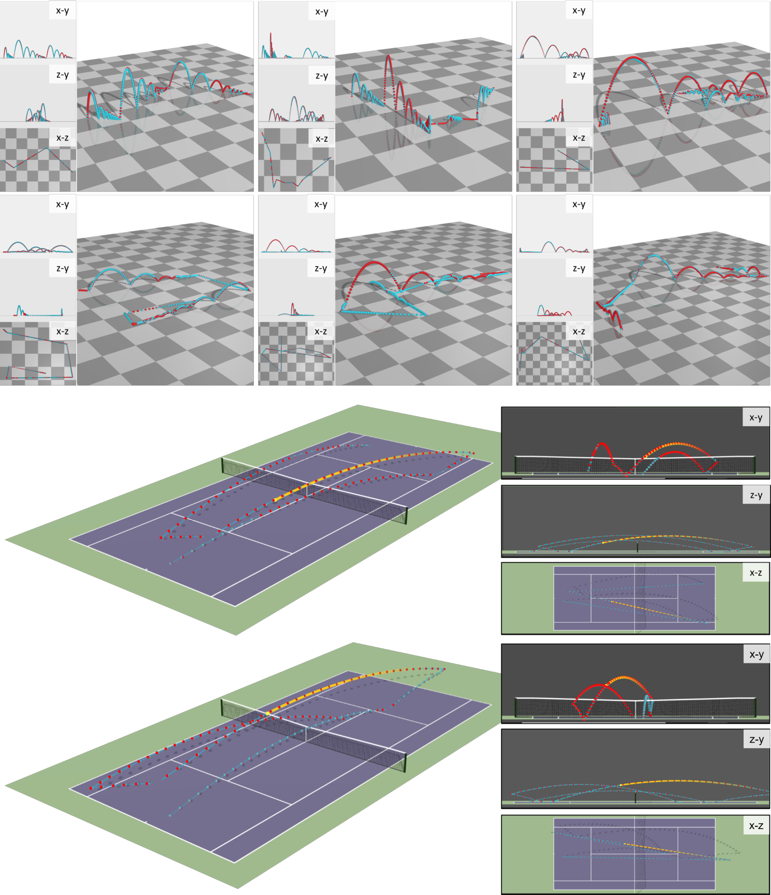
Figure 11 : Qualitative results on synthetic datasets.
图 11：合成数据集的定性结果。
Blue: our predictions.
蓝色：我们的预测。
Red: ground truth.
红色：真值。
The first row is the results from Synthetic Mocap and each checkerboard block is 75 75 cm 2 .
第一行是 Synthetic Mocap 的结果，每个棋盘块为 75 75 cm 2 。
The second row is the results from Synthetic IPL and each checkerboard block is 250 250 cm 2 .
第二行是合成 IPL 的结果，每个棋盘块为 250 250 cm 2 。
The last two rows are the results from Synthetic Tennis.
最后两行是合成网球的结果。
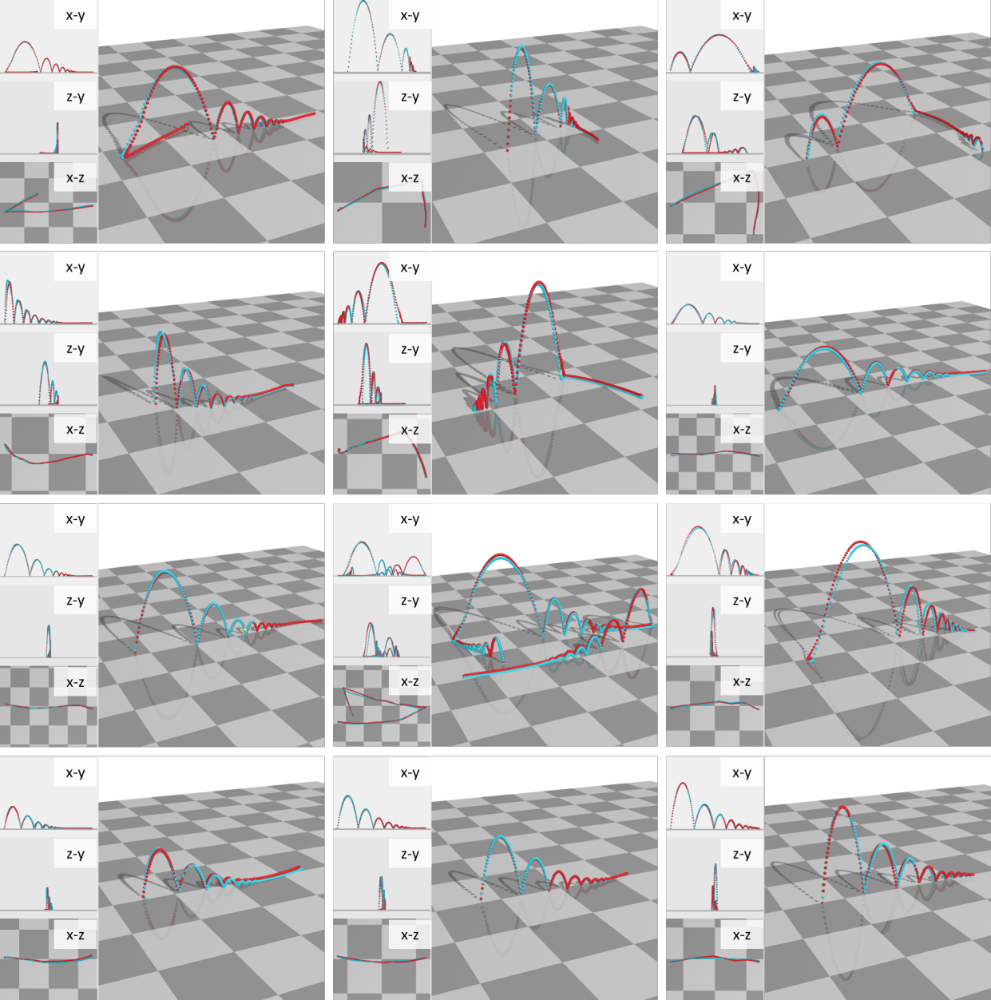
Figure 12 : Qualitative results on Real Mocap dataset.
图 12：Real Mocap 数据集的定性结果。
Blue: our predictions.
蓝色：我们的预测。
Red: ground truth.
红色：真值。
Each checkerboard block is 75 75 cm 2 .
每个棋盘块的尺寸为 75 75 cm 2 。
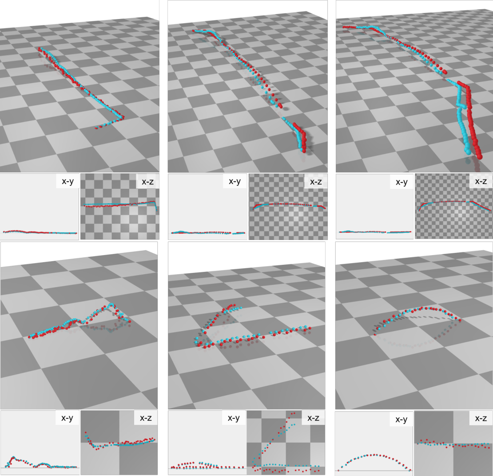
Figure 13 : Qualitative results on Real IPL dataset.
图 13：Real IPL 数据集的定性结果。
Blue: our predictions.
蓝色：我们的预测。
Red: ground truth.
红色：真值。
Each checkerboard block is 250 250 cm 2 .
每个棋盘块的大小为 250 250 cm 2 。
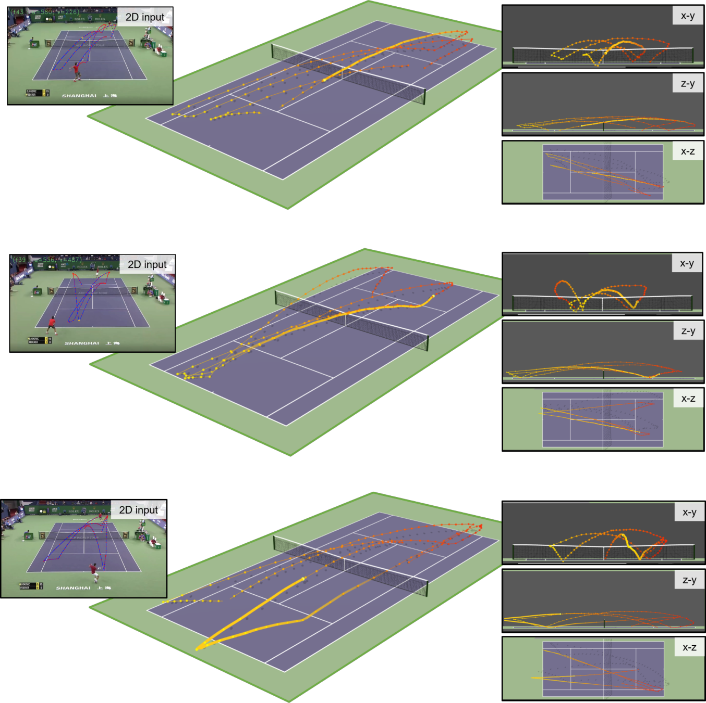
Figure 14 : Qualitative results on Real Tracknet (Tennis) dataset.
图 14：Real Tracknet（网球）数据集的定性结果。
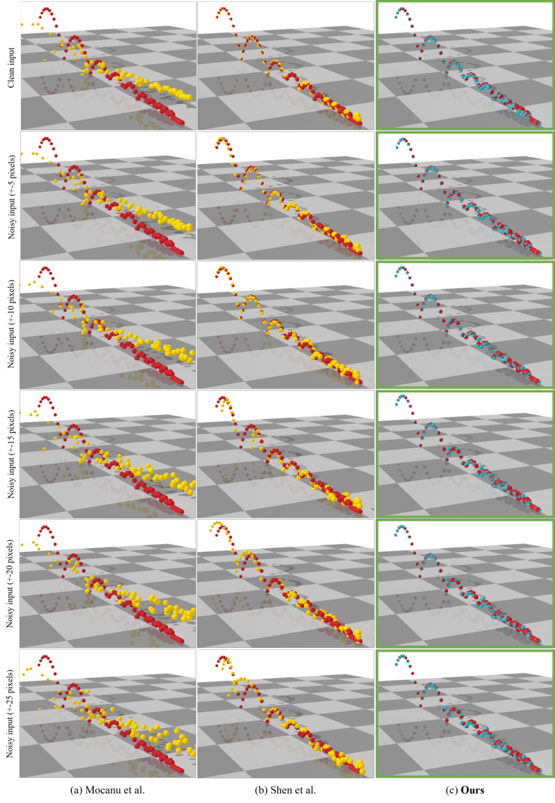
Figure 15 : State-of-the-art comparison with a learning-based approach Mocanu et al. [ 30 ] and a physics-based approach Shen et al. [ 46 ] on a simplified test trajectory that matches their requirements.
图 15：与基于学习的方法 Mocanu 等人的最先进的比较。 [30]和基于物理的方法 Shen 等人。 [46]在符合他们要求的简化测试轨迹上。
Each row uses a different noise level.
每行使用不同的噪声级别。
Our predictions are shown in blue, prior work in yellow, and ground truth in red.
我们的预测以蓝色显示，之前的工作以黄色显示，真值以红色显示。
Each checkerboard block is 50 50 cm 2 .
每个棋盘块的大小为 50 50 cm 2 。
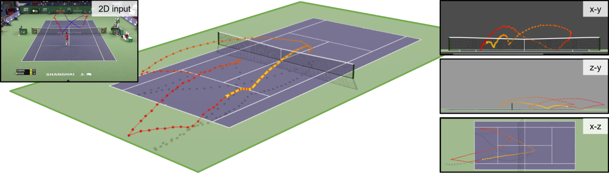
Figure 16 : Failure cases on Real Tracknet(Tennis) dataset.
图 16：Real Tracknet（网球）数据集上的失败案例。
This trajectory comes from a volley shot close to the net where the ball bounces right back without hitting the ground, but our prediction shows some slight drop in the ball’s height.
该轨迹来自靠近球网的截击球，球会立即反弹而不会击中地面，但我们的预测显示球的高度略有下降。
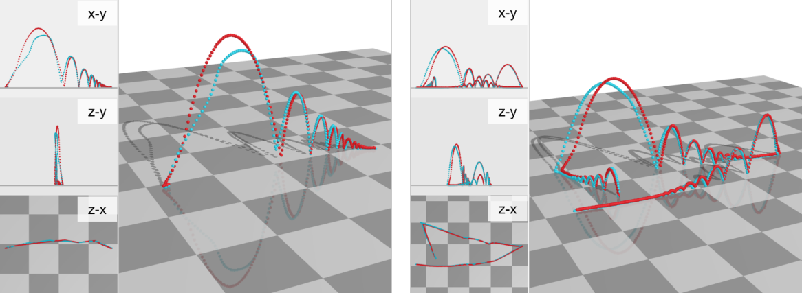
Figure 17 : Failure cases on Real Mocap dataset.
图 17：Real Mocap 数据集上的失败案例。
Blue: our predictions.
蓝色：我们的预测。
Red: ground truth.
红色：真值。
Each checkerboard block is 75 75 cm 2 .
每个棋盘块的尺寸为 75 75 cm 2 。
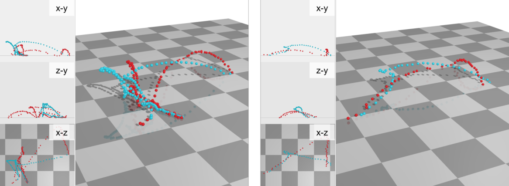
Figure 18 : Failure cases on Real IPL(soccer) dataset.
图 18：Real IPL（足球）数据集上的失败案例。
When a soccer player chests the ball, the trajectory may look very different from the training trajectories, leading to these errors.
当足球运动员胸部传球时，轨迹可能看起来与训练轨迹非常不同，从而导致这些错误。
Blue: our predictions.
蓝色：我们的预测。
Red: ground truth.
红色：真值。
Each checkerboard block is 250 250 cm 2 .
每个棋盘块的尺寸为 250 250 cm 2 。
Footnotes脚注
Footnote 1: 1 Results were generated and tuned using their code, and verified with the authors.
脚注 1：1 结果是使用他们的代码生成和调整的，并与作者验证。